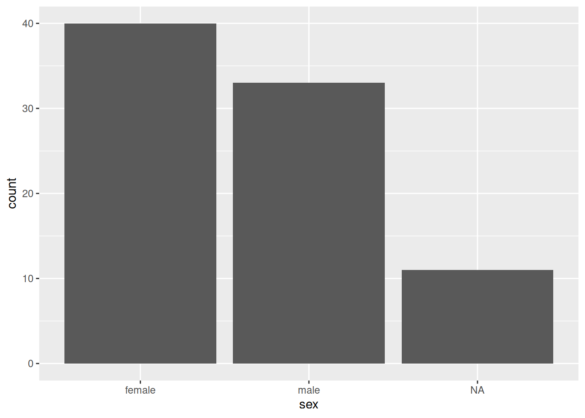
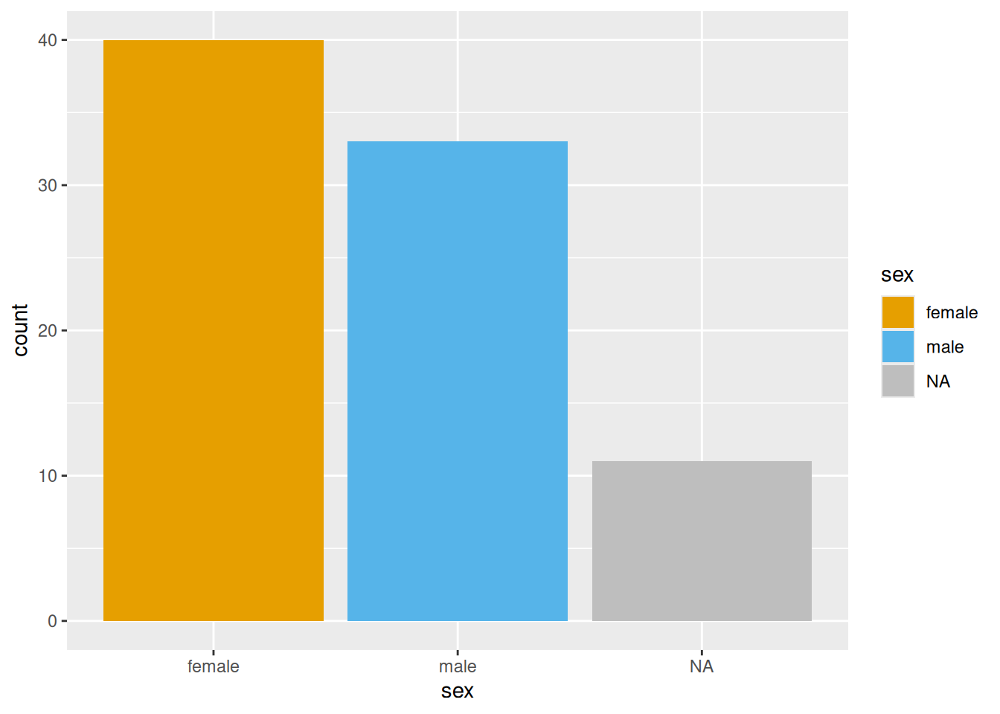
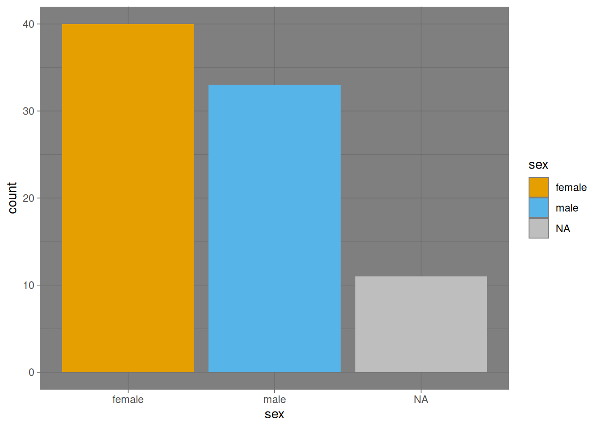
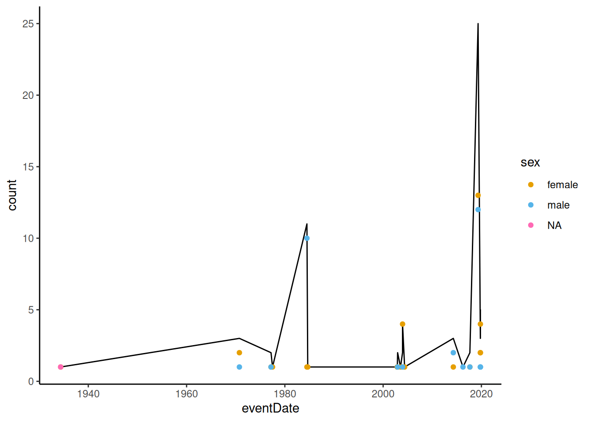

BIOL361 Prac 1 — R and tidyverse basics
Dr James B Dorey, University of Wollongong
Version 2025-02-24; practical 2025-03-24
Prac1_BIOL361.RmdAbstract
This practical class should not be particularly onerous. Today is mostly focussed on giving you a very brief overview of R and RStudio.R is a very useful programming language that’s open access and widely used in science. We don’t expect you to become a master by the end of this topic or to understand everything that you’re doing right now. But, by helping you get started and giving you robust example code we hope to enable you to succeed using R in the future, should you chose to pick it up more consistently.
Introduction to the R practicals
In BIOL361 I will take you through only two practicals, both based in R. If you’ve taken my other courses you may already know that I’m interested in giving you all a good knowledge of coding in R and how it’s an extremely powerful tool for your careers. There may be some overlap and repetition, sorry in advance, but I want to make sure that everyone can jump in and start working on relatively even footing.
This prac will focus on teaching you some of the (1) basics of R and RStudio, (2) getting your workspace ready, (3) reading in some data, (4) a touch of data manipulation, and (5) creating some simple plots.
The second prac will focus on some basics of running geographic information systems (GIS) analyses in R. You may have already done some GIS work in ArcMap (which is an expensive and proprietary program that only works on PC) or QGIS (an open source program that works across PC, mac, and Linux). I have previously found both to be equally as terrible as each other, but I haven’t used either for some time because now I work in R!
Finally, a small note to mention that these pracitcals are checked, double checked, and run in a way to make sure that it works. However, as you will learn making your own code, once yo ugive it to someone else they’re likely going to break it. That’s not a problem and we are here to help you! So, don’t stress out too much :)
Working together
You won’t be forming groups per se, but it is possible to work together on benches to provide your neighbours help with code and the like. I do encourage this as your neighbour may have already overcome errors that you have come across and both the student helping and the one receiving help should benefit! Of course, we will be here to help you as well; your Demonstrators should have the answers and, if not, your Lecturers will.
base R and the tidyverse
In my tutorials you will notice that I tend to use tidyverse packages — such as dplyr, magrittr, stringr, readr, and ggplot2. I do thise rather than using the r packages, base, plot, and several others for a couple of very good reasons.
tidyverse is easier to read! This is one of the primary reasons! These packages are made to work well together and be human-readable. Weh nwe want to “filter” out data rows we literally `
dplyr::filter()those rows. If we want to “select” only certain columns, well wedplyr::select()those columns! If we want to extract strings of text that match certain patterns, well we canstringr::str_extract()those strings.It is generally faster. This may not seem like much, but when you’re dealing with hundreds of millions of data cells then you’re going to want to do this quickly. In general, tidyverese functinos are faster than base functions. Although, there are some packages that are quicker.
Using tidyverse doesn’t mean you can’t also work together with base R. You don’t need to pick on or the other; they both work together perfectly well! especially as you get more comfortable in this regard.
Attention:
I will be explicit when I am using
a function from a certain function. When you see two columns, like
dplyr::select(), know that I’m calling the package
dplyr and the function select. Some
functions can be called by more than one
package; so this is actually really good practice! I
also find that it makes it easier for me to not make mistakes and to
better-understand what I’m doing.
1 Getting ready with R and RStudio
Your computers should already have R and RStudio installed. If they do not, or you are using a personal computer, feel free to follow the steps below to prepare yourself for the week 2 practicals, where we will dive in pretty quickly.
If you have a moment of spare time you may consider skimming the below text, especially the “Script preparation” and “What’s coming next week” sections.
Attention:
This section has three tabs;
1.1–1.3.
1.1 Install R
If R is NOT installed on your computer already, we will go ahead and do that now. Please visit the CSIRO mirror for CRAN and download the relevant version of R for your operating system. Then, follow the instructions to install it on your computer.
1.2 Install RStudio
R is a command-land programming language and R, by itself is horribly ugly and I don’t like the idea of working in it directly. For this reason, most users will use R within a much nicer interface program, called RStudio. Download the free version of RStudio. Now, when both programs are installed, you can simply open up RStudio and get coding!
We are not going to do much with R today, don’t worry, but I’d like to get you a little acquainted and at least start installing some packages in R so that we are ready for the following weeks.
1.3 Running R in RStudio
Before we get into working in RStudio, let’s make a folder where we will save all of our practical outputs and related files. Mine is called “BIOL361_pracs_2025”. Notice how I have used underscores instead of spaces? This is very good practice to not have ANY spaces in your folder paths where you want to do coding stuff. Most of the time it’s fine… but, pro tip, sometimes, it will cause problems that might be hard to track down!
When you open up RStudio for the first time, it will look a little something like the below (Fig. 2). But, without the funky colour scheme.

In the top left-hand side drop down, there is a white page with a green plus sign on it. Click on that and you can then select to add a new “R Script” (Fig. 3). We can then go ahead and save this blank script in a folder for these pracs (Fig. 4). I have called this script “MyFirstRScript.R”.


It’s also VERY good practice to leave some info about who made this script, why, and how they can get in touch with you! Go ahead and copy the below into your script and then personalise it with your details!
# BIOL361 at the University of Wollongong, very basic R stuff
# Getting ready to do stuff with R
# Written by FirstName LastName YEAR-MONTH-DAY University of Wollongong; your@email.hereDid you notice all of the hashtags? These are comments and R will ignore them (Fig. 5)!

2 Script preparation
2.1 Working directory
Let us begin by telling R where our working directory (the folder that you made above) actually is. My “BIOL361_pracs_2024” folder is found at the end of the path:
“/Users/jamesdorey/Desktop/Uni/Teaching/BIOL361/Lectures/2025/Github_BIOL361_25/BIOL361_25/DoreyPrac1” (see again, no spaces!). So, I can run the below:
# Set the RootPath to your folder
RootPath <- "/Users/jamesdorey/Desktop/Uni/Teaching/BIOL361/Lectures/2025/Github_BIOL361_25/BIOL361_25/DoreyPrac1"
# You can then set this as the project's working directory.
# This is where R will first look to find
# or save data as a default
setwd(RootPath)Congratulations, you have set your working directory! R can still access files outside of this folder, but it will look there by default after you set it (this must be set each time you open R).
A quick pro-tip: You can run code, once it’s entered into your script by having your mouse click on, or above, the line that you want to run and then pressing the “Run” button on the top right hand side of the script window. That’s a right pain. On mac you can simply use “command+enter” and on PC you can use “control+enter” to run your code. It’ll make you life easier and quicker.
2.2 Install packages
Let us also quickly install a few packages that we’ll need to start with next week (you mostly only need to do this once per package and per version of R).
# This package is for data management and table manipulation
install.packages("dplyr")
# This package is for reading in tabular data, like .csv files
install.packages("readr")
# This package lets us use tidy pipes; %>%
install.packages("magrittr")
# This package is used to manipulate strings of text — it's really powerful!
install.packages("stringr")You may have seen that more than one package was installed when you ran the above code. That’s normal, many packages depend on other packages to work.
2.3 Load packages
The last R thing that I will get you to do today is to load the packages into R (this also should be done every time you open R, for the relevant packages). You need to do this because you may not always want EVERY package that you have ever downloaded to be accessible from in R… it can cause issues. In this way, you can be more selective about which ones are active.
You can find more info about getting started with R and RStudio, along with other tutorials at Our Coding Club.
3 Read in data
Let’s go ahead and download a dataset from this publication to play with. We can start by simply downloading it using the below code (or you could copy the url to the website and download it via your browser, but why not do it all in R?).
utils::download.file(url = "https://raw.githubusercontent.com/jbdorey/BIOL361_25/main/DoreyPrac1/SuppCollectionInfo_7Aug2023.csv",
destfile = "SuppCollectionInfo_7Aug2023.csv",
method="curl")Okay, we have downloaded these data and you can go ahead and look in your working directory (if you’re not sure type “getwd()” into R to see where this is). Let’s go ahead and read it into R and we can also look at it once it’s read in. To do this, we will use the tidyverse package, readr.
# read in the data using readr
HylaeusData <- readr::read_csv("SuppCollectionInfo_7Aug2023.csv")
#> New names:
#> Rows: 84 Columns: 42
#> ── Column specification
#> ──────────────────────────────────── Delimiter: "," chr
#> (31): recordNumber, otherCatalogNumbers, catalogNum... dbl
#> (7): year, month, day, individualCount, coordinate... lgl
#> (2): ...27, ...42 date (1): eventDate time (1): eventTime
#> ℹ Use `spec()` to retrieve the full column specification
#> for this data. ℹ Specify the column types or set
#> `show_col_types = FALSE` to quiet this message.
#> • `` -> `...27`
#> • `` -> `...42`Now that we have read it in, you can view the data either by simply
running “HylaeusData” or “View(HylaeusData)”.
You can also have a scroll below of the dataset.
Q1: What kind of data are we looking at here?
| recordNumber | otherCatalogNumbers | catalogNumber | associatedSequences | scientificName | identifiedBy | sex | typeStatus | Scribe | eventDate | year | month | day | verbatimEventDate | eventTime | individualCount | order | family | genus | subgenus | specificEpithet | cladeDesignation | GPS# | verbatimElevation | coordinateUncertaintyInMeters | Google Earth Elevation | …27 | decimalLatitude | decimalLongitude | georeferencedBy | recordedBy | basisOfRecord | samplingProtocol | associatedTaxa | locality | island | country | fieldNotes | institutionCode | identificationReferences | samplingEffort | …42 |
|---|---|---|---|---|---|---|---|---|---|---|---|---|---|---|---|---|---|---|---|---|---|---|---|---|---|---|---|---|---|---|---|---|---|---|---|---|---|---|---|---|---|
| FJVL6b_N02_16 | NA | FBA 063182 | NA | Hylaeus albaeus | Karl Magnacca | female | NA | NA | 2003-12-15 | 2003 | 12 | 15 | 24.XI-15.XII.[20]03 | NA | 1 | Hymenoptera | Colletidae | Hylaeus | Prosopisteron | albaeus | CladeB | NA | 55 m | NA | NA | NA | -18.16940 | 177.4847 | NA | E Schlinger, M Tokotaʻa | PreservedSpecimen | Malaise | NA | Sigatoka Sand Dunes N.P.; 1.1 km SSW of Volivoli Vlg. | Viti Levu | Fiji | NA | BPBM | NA | 21 days | NA |
| FJVL6b_M02_16 | NA | FBA 063181 | NA | Hylaeus albaeus | Karl Magnacca | female | NA | NA | 2003-12-15 | 2003 | 12 | 15 | 24.XI-15.XII.[20]03 | NA | 1 | Hymenoptera | Colletidae | Hylaeus | Prosopisteron | albaeus | CladeB | NA | 55 m | NA | NA | NA | -18.16940 | 177.4847 | NA | E Schlinger, M Tokotaʻa | PreservedSpecimen | Malaise | NA | Sigatoka Sand Dunes N.P., malaise 1.1 km SSW of Volivoli Vlg. | Viti Levu | Fiji | NA | BPBM | NA | 21 days | NA |
| FJVL6b_M02_16 | NA | FBA 063184 | NA | Hylaeus albaeus | Karl Magnacca | female | NA | NA | 2003-12-15 | 2003 | 12 | 15 | 24.XI-15.XII.[20]03 | NA | 1 | Hymenoptera | Colletidae | Hylaeus | Prosopisteron | albaeus | CladeB | NA | 55 m | NA | NA | NA | -18.16940 | 177.4847 | NA | E Schlinger, M Tokotaʻa | PreservedSpecimen | Malaise | NA | Sigatoka Sand Dunes N.P., malaise 1.1 km SSW of Volivoli Vlg. | Viti Levu | Fiji | NA | BPBM | NA | 21 days | NA |
| FJVL6b_M02_16 | NA | FBA 063195 | NA | Hylaeus albaeus | Karl Magnacca | female | NA | NA | 2003-12-15 | 2003 | 12 | 15 | 24.XI-15.XII.[20]03 | NA | 1 | Hymenoptera | Colletidae | Hylaeus | Prosopisteron | albaeus | CladeB | NA | 55 m | NA | NA | NA | -18.16940 | 177.4847 | NA | E Schlinger, M Tokotaʻa | PreservedSpecimen | Malaise | NA | Sigatoka Sand Dunes N.P., malaise 1.1 km SSW of Volivoli Vlg. | Viti Levu | Fiji | NA | BPBM | NA | 21 days | NA |
| FJVL6b_M02_19 | NA | FBA 064760 | NA | Hylaeus albaeus | Karl Magnacca | female | NA | NA | 2004-05-17 | 2004 | 5 | 17 | 5.IV-17.V.[20]04 | NA | 1 | Hymenoptera | Colletidae | Hylaeus | Prosopisteron | albaeus | CladeB | NA | 55 m | NA | NA | NA | -18.16940 | 177.4847 | NA | E Schlinger, M Tokotaʻa | PreservedSpecimen | Malaise | NA | Sigatoka Sand Dunes N.P., malaise 1.1 km SSW of Volivoli Vlg. | Viti Levu | Fiji | NA | BPBM | NA | 42 days | NA |
| CFJRR_NH9 | CFJRR_NH9 | NA | NH9 | Hylaeus albaeus | James B Dorey | male | Holotype | NA | 2016-04-01 | 2016 | 4 | NA | NA | NA | 1 | Hymenoptera | Colletidae | Hylaeus | Prosopisteron | albaeus | CladeB | NA | 3 m | 20 | NA | NA | -17.36030 | 178.1537 | NA | MP Schwarz | PreservedSpecimen | Sweep net | Metrosideros collina var. collina | Rakiraki hotel | Viti Levu | Fiji | NA | SAMA | Michener, CD. (2007). The Bees of the World; Houston, TF. (1981). A Revision of the Australian Hylaeine Bees (Hymenoptera : Colletidae) | NA | NA |
| NA | NA | NA | NA | Hylaeus albaeus | Karl Magnacca | female | NA | NA | 1970-10-01 | 1970 | 10 | 1 | 1.X.[19]70 | NA | 1 | Hymenoptera | Colletidae | Hylaeus | Prosopisteron | albaeus | CladeB | NA | 500–600 m | 20000 | NA | NA | -17.80000 | 177.7000 | JB Dorey | NLH Krauss | PreservedSpecimen | NA | NA | Nausori Highlands | Viti Levu | Fiji | NA | BPBM | NA | NA | NA |
| NA | NA | NA | NA | Hylaeus albaeus | Karl Magnacca | female | NA | NA | 1970-10-01 | 1970 | 10 | 1 | 1.X.[19]71; [possibly year wrong? printed label corrected by hand on the other specimens, not on this one] | NA | 1 | Hymenoptera | Colletidae | Hylaeus | Prosopisteron | albaeus | CladeB | NA | 500–600 m | 20000 | NA | NA | -17.80000 | 177.7000 | JB Dorey | NLH Krauss | PreservedSpecimen | NA | NA | Nausori Highlands | Viti Levu | Fiji | NA | BPBM | NA | NA | NA |
| FJ-6B Malaise | NA | FBA 026755 | NA | Hylaeus albaeus | Karl Magnacca | female | NA | NA | 2002-12-13 | 2002 | 12 | 13 | 1.XII–13.XII.[20]02 | NA | 1 | Hymenoptera | Colletidae | Hylaeus | Prosopisteron | albaeus | CladeB | NA | 100 m | NA | NA | NA | -18.16000 | 177.5000 | NA | M Irwin, E Schlinger, M Tokotaʻa | PreservedSpecimen | Malaise | NA | Sigatoka Prov., Sigatoka Sand Dunes N.P. | Viti Levu | Fiji | NA | BPBM | NA | 12 days | NA |
| FJ-6B Malaise | NA | FBA 026760 | NA | Hylaeus albaeus | Karl Magnacca | male | NA | NA | 2002-12-13 | 2002 | 12 | 13 | 1.XII–13.XII.[20]02 | NA | 1 | Hymenoptera | Colletidae | Hylaeus | Prosopisteron | albaeus | CladeB | NA | 100 m | NA | NA | NA | -18.16000 | 177.5000 | NA | M Irwin, E Schlinger, M Tokotaʻa | PreservedSpecimen | Malaise | NA | Sigatoka Prov., Sigatoka Sand Dunes N.P. | Viti Levu | Fiji | NA | BPBM | NA | 12 days | NA |
| FJ-6C Malaise | NA | FBA 035880 | NA | Hylaeus albaeus | Karl Magnacca | female | NA | NA | 2003-12-13 | 2003 | 12 | 13 | 1.XII–13.XII.[20]03 | NA | 1 | Hymenoptera | Colletidae | Hylaeus | Prosopisteron | albaeus | CladeB | NA | 100 m | NA | NA | NA | -18.16000 | 177.5000 | NA | M Irwin, E Schlinger, M Tokotaʻa | PreservedSpecimen | Malaise | NA | Sigatoka Sand Dunes N.P. | Viti Levu | Fiji | NA | BPBM | NA | 12 days | NA |
| FJ-6C Malaise | NA | FBA 035899 | NA | Hylaeus albaeus | Karl Magnacca | male | NA | NA | 2003-12-13 | 2003 | 12 | 13 | 1.XII–13.XII.[20]03 | NA | 1 | Hymenoptera | Colletidae | Hylaeus | Prosopisteron | albaeus | CladeB | NA | 100 m | NA | NA | NA | -18.16000 | 177.5000 | NA | M Irwin, E Schlinger, M Tokotaʻa | PreservedSpecimen | Malaise | NA | Sigatoka Sand Dunes N.P. | Viti Levu | Fiji | NA | BPBM | NA | 12 days | NA |
| GA19MCE76 | 19FJ51 | SAMA | MSAPB4748_19 | Hylaeus apertus | James B Dorey | female | NA | MCElmer | 2019-04-29 | 2019 | 4 | 29 | NA | 13:12:00 | 1 | Hymenoptera | Colletidae | Hylaeus | Prosopisteron | apertus | CladeE | Avenza, android (MCE’s phone) | 875 m | 10 | 872 | NA | -16.83622 | -179.9730 | NA | JBDorey | PreservedSpecimen | General sweep | Metrosideros collina var. collina | Taveuni - Des Voeux track | Taveuni | Fiji | JBDorey noticed little red flowers at the top of a high tree and began sweeping with the long net. Tree was about 10-15 m tall and likely a Myrtaceae. After first sweep noticed some colletids, likely Hylaeus sp. And we continued sweeping for a while catching colletids and Homalictus. There were many plants near this tree that we did not find bees on, including Stachytarpheta urticifolia, Polygala paniculata and touchy feely plant. A small sample of the tree was taken, with some photos, which were later identified by Marika Tuiwawa as Metrosideros collina var. collina. Sunny and warm. | SAMA | Michener, CD. (2007). The Bees of the World; Houston, TF. (1981). A Revision of the Australian Hylaeine Bees (Hymenoptera : Colletidae) | NA | NA |
| GA19MCE77 | 19FJ59 | SAMA | NA | Hylaeus apertus | James B Dorey | female | NA | MCElmer | 2019-04-29 | 2019 | 4 | 29 | NA | 13:20:00 | 1 | Hymenoptera | Colletidae | Hylaeus | Prosopisteron | apertus | CladeE | Avenza, android (MCE’s phone) | 875 m | 10 | 872 | NA | -16.83622 | -179.9730 | NA | JBDorey | PreservedSpecimen | General sweep | Metrosideros collina var. collina | Taveuni - Des Voeux track | Taveuni | Fiji | JBDorey noticed little red flowers at the top of a high tree and began sweeping with the long net. Tree was about 10-15 m tall and likely a Myrtaceae. After first sweep noticed some colletids, likely Hylaeus sp. And we continued sweeping for a while catching colletids and Homalictus. There were many plants near this tree that we did not find bees on, including Stachytarpheta urticifolia, Polygala paniculata and touchy feely plant. A small sample of the tree was taken, with some photos, which were later identified by Marika Tuiwawa as Metrosideros collina var. collina. Sunny and warm. | SAMA | Michener, CD. (2007). The Bees of the World; Houston, TF. (1981). A Revision of the Australian Hylaeine Bees (Hymenoptera : Colletidae) | NA | NA |
| GA19MCE77 | 19FJ61 | SAMA | NA | Hylaeus apertus | James B Dorey | female | NA | MCElmer | 2019-04-29 | 2019 | 4 | 29 | NA | 13:20:00 | 1 | Hymenoptera | Colletidae | Hylaeus | Prosopisteron | apertus | CladeE | Avenza, android (MCE’s phone) | 875 m | 10 | 872 | NA | -16.83622 | -179.9730 | NA | JBDorey | PreservedSpecimen | General sweep | Metrosideros collina var. collina | Taveuni - Des Voeux track | Taveuni | Fiji | JBDorey noticed little red flowers at the top of a high tree and began sweeping with the long net. Tree was about 10-15 m tall and likely a Myrtaceae. After first sweep noticed some colletids, likely Hylaeus sp. And we continued sweeping for a while catching colletids and Homalictus. There were many plants near this tree that we did not find bees on, including Stachytarpheta urticifolia, Polygala paniculata and touchy feely plant. A small sample of the tree was taken, with some photos, which were later identified by Marika Tuiwawa as Metrosideros collina var. collina. Sunny and warm. | SAMA | Michener, CD. (2007). The Bees of the World; Houston, TF. (1981). A Revision of the Australian Hylaeine Bees (Hymenoptera : Colletidae) | NA | NA |
| GA19MCE78 | 19FJ63 | SAMA | NA | Hylaeus apertus | James B Dorey | female | NA | MCElmer | 2019-04-29 | 2019 | 4 | 29 | NA | 13:30:00 | 1 | Hymenoptera | Colletidae | Hylaeus | Prosopisteron | apertus | CladeE | Avenza, android (MCE’s phone) | 875 m | 10 | 872 | NA | -16.83622 | -179.9730 | NA | JBDorey | PreservedSpecimen | General sweep | Metrosideros collina var. collina | Taveuni - Des Voeux track | Taveuni | Fiji | JBDorey noticed little red flowers at the top of a high tree and began sweeping with the long net. Tree was about 10-15 m tall and likely a Myrtaceae. After first sweep noticed some colletids, likely Hylaeus sp. And we continued sweeping for a while catching colletids and Homalictus. There were many plants near this tree that we did not find bees on, including Stachytarpheta urticifolia, Polygala paniculata and touchy feely plant. A small sample of the tree was taken, with some photos, which were later identified by Marika Tuiwawa as Metrosideros collina var. collina. Sunny and warm. | SAMA | Michener, CD. (2007). The Bees of the World; Houston, TF. (1981). A Revision of the Australian Hylaeine Bees (Hymenoptera : Colletidae) | NA | NA |
| GA19MCE81 | 19FJ74 | SAMA | NA | Hylaeus apertus | James B Dorey | female | NA | MCElmer | 2019-04-29 | 2019 | 4 | 29 | NA | 13:42:00 | 1 | Hymenoptera | Colletidae | Hylaeus | Prosopisteron | apertus | CladeE | Avenza, android (MCE’s phone) | 875 m | 10 | 872 | NA | -16.83622 | -179.9730 | NA | JBDorey | PreservedSpecimen | General sweep | Metrosideros collina var. collina | Taveuni - Des Voeux track | Taveuni | Fiji | JBDorey noticed little red flowers at the top of a high tree and began sweeping with the long net. Tree was about 10-15 m tall and likely a Myrtaceae. After first sweep noticed some colletids, likely Hylaeus sp. And we continued sweeping for a while catching colletids and Homalictus. There were many plants near this tree that we did not find bees on, including Stachytarpheta urticifolia, Polygala paniculata and touchy feely plant. A small sample of the tree was taken, with some photos, which were later identified by Marika Tuiwawa as Metrosideros collina var. collina. Sunny and warm. | SAMA | Michener, CD. (2007). The Bees of the World; Houston, TF. (1981). A Revision of the Australian Hylaeine Bees (Hymenoptera : Colletidae) | NA | NA |
| GA19MCE76 | 19FJ53 | SAMA | NA | Hylaeus apertus | James B Dorey | female | NA | MCElmer | 2019-04-29 | 2019 | 4 | 29 | NA | 13:12:00 | 1 | Hymenoptera | Colletidae | Hylaeus | Prosopisteron | apertus | CladeE | Avenza, android (MCE’s phone) | 875 m | 10 | 872 | NA | -16.83622 | -179.9730 | NA | JBDorey | PreservedSpecimen | General sweep | Metrosideros collina var. collina | Taveuni - Des Veoux track | Taveuni | Fiji | JBDorey noticed little red flowers at the top of a high tree and began sweeping with the long net. Tree was about 10-15 m tall and likely a Myrtaceae. After first sweep noticed some colletids, likely Hylaeus sp. And we continued sweeping for a while catching colletids and Homalictus. There were many plants near this tree that we did not find bees on, including Stachytarpheta urticifolia, Polygala paniculata and touchy feely plant. A small sample of the tree was taken, with some photos, which were later identified by Marika Tuiwawa as Metrosideros collina var. collina. Sunny and warm. | SAMA | Michener, CD. (2007). The Bees of the World; Houston, TF. (1981). A Revision of the Australian Hylaeine Bees (Hymenoptera : Colletidae) | NA | NA |
| GA19MCE77 | 19FJ55 | NA | NA | Hylaeus apertus | James B Dorey | female | NA | MCElmer | 2019-04-29 | 2019 | 4 | 29 | NA | 13:20:00 | 1 | Hymenoptera | Colletidae | Hylaeus | Prosopisteron | apertus | CladeE | Avenza, android (MCE’s phone) | 875 m | 10 | 872 | NA | -16.83622 | -179.9730 | NA | JBDorey | PreservedSpecimen | General sweep | Metrosideros collina var. collina | Taveuni - Des Veoux track | Taveuni | Fiji | JBDorey noticed little red flowers at the top of a high tree and began sweeping with the long net. Tree was about 10-15 m tall and likely a Myrtaceae. After first sweep noticed some colletids, likely Hylaeus sp. And we continued sweeping for a while catching colletids and Homalictus. There were many plants near this tree that we did not find bees on, including Stachytarpheta urticifolia, Polygala paniculata and touchy feely plant. A small sample of the tree was taken, with some photos, which were later identified by Marika Tuiwawa as Metrosideros collina var. collina. Sunny and warm. | SAMA | Michener, CD. (2007). The Bees of the World; Houston, TF. (1981). A Revision of the Australian Hylaeine Bees (Hymenoptera : Colletidae) | NA | NA |
| GA19MCE77 | 19FJ57 | NA | NA | Hylaeus apertus | James B Dorey | female | NA | MCElmer | 2019-04-29 | 2019 | 4 | 29 | NA | 13:20:00 | 1 | Hymenoptera | Colletidae | Hylaeus | Prosopisteron | apertus | CladeE | Avenza, android (MCE’s phone) | 875 m | 10 | 872 | NA | -16.83622 | -179.9730 | NA | JBDorey | PreservedSpecimen | General sweep | Metrosideros collina var. collina | Taveuni - Des Veoux track | Taveuni | Fiji | JBDorey noticed little red flowers at the top of a high tree and began sweeping with the long net. Tree was about 10-15 m tall and likely a Myrtaceae. After first sweep noticed some colletids, likely Hylaeus sp. And we continued sweeping for a while catching colletids and Homalictus. There were many plants near this tree that we did not find bees on, including Stachytarpheta urticifolia, Polygala paniculata and touchy feely plant. A small sample of the tree was taken, with some photos, which were later identified by Marika Tuiwawa as Metrosideros collina var. collina. Sunny and warm. | SAMA | Michener, CD. (2007). The Bees of the World; Houston, TF. (1981). A Revision of the Australian Hylaeine Bees (Hymenoptera : Colletidae) | NA | NA |
| GA19MCE78 | 19FJ64 | NA | NA | Hylaeus apertus | James B Dorey | female | NA | MCElmer | 2019-04-29 | 2019 | 4 | 29 | NA | 13:30:00 | 1 | Hymenoptera | Colletidae | Hylaeus | Prosopisteron | apertus | CladeE | Avenza, android (MCE’s phone) | 875 m | 10 | 872 | NA | -16.83622 | -179.9730 | NA | JBDorey | PreservedSpecimen | General sweep | Metrosideros collina var. collina | Taveuni - Des Veoux track | Taveuni | Fiji | JBDorey noticed little red flowers at the top of a high tree and began sweeping with the long net. Tree was about 10-15 m tall and likely a Myrtaceae. After first sweep noticed some colletids, likely Hylaeus sp. And we continued sweeping for a while catching colletids and Homalictus. There were many plants near this tree that we did not find bees on, including Stachytarpheta urticifolia, Polygala paniculata and touchy feely plant. A small sample of the tree was taken, with some photos, which were later identified by Marika Tuiwawa as Metrosideros collina var. collina. Sunny and warm. | SAMA | Michener, CD. (2007). The Bees of the World; Houston, TF. (1981). A Revision of the Australian Hylaeine Bees (Hymenoptera : Colletidae) | NA | NA |
| GA19MCE79 | 19FJ66 | NA | NA | Hylaeus apertus | James B Dorey | female | NA | MCElmer | 2019-04-29 | 2019 | 4 | 29 | NA | 13:37:00 | 1 | Hymenoptera | Colletidae | Hylaeus | Prosopisteron | apertus | CladeE | Avenza, android (MCE’s phone) | 875 m | 10 | 872 | NA | -16.83622 | -179.9730 | NA | MIStevens, MCElmer | PreservedSpecimen | General sweep | Metrosideros collina var. collina | Taveuni - Des Veoux track | Taveuni | Fiji | JBDorey noticed little red flowers at the top of a high tree and began sweeping with the long net. Tree was about 10-15 m tall and likely a Myrtaceae. After first sweep noticed some colletids, likely Hylaeus sp. And we continued sweeping for a while catching colletids and Homalictus. There were many plants near this tree that we did not find bees on, including Stachytarpheta urticifolia, Polygala paniculata and touchy feely plant. A small sample of the tree was taken, with some photos, which were later identified by Marika Tuiwawa as Metrosideros collina var. collina. Sunny and warm. | SAMA | Michener, CD. (2007). The Bees of the World; Houston, TF. (1981). A Revision of the Australian Hylaeine Bees (Hymenoptera : Colletidae) | NA | NA |
| GA19MCE80 | 19FJ69 | NA | NA | Hylaeus apertus | James B Dorey | female | NA | MCElmer | 2019-04-29 | 2019 | 4 | 29 | NA | 13:42:00 | 1 | Hymenoptera | Colletidae | Hylaeus | Prosopisteron | apertus | CladeE | Avenza, android (MCE’s phone) | 875 m | 10 | 872 | NA | -16.83622 | -179.9730 | NA | JBDorey | PreservedSpecimen | General sweep | Metrosideros collina var. collina | Taveuni - Des Veoux track | Taveuni | Fiji | JBDorey noticed little red flowers at the top of a high tree and began sweeping with the long net. Tree was about 10-15 m tall and likely a Myrtaceae. After first sweep noticed some colletids, likely Hylaeus sp. And we continued sweeping for a while catching colletids and Homalictus. There were many plants near this tree that we did not find bees on, including Stachytarpheta urticifolia, Polygala paniculata and touchy feely plant. A small sample of the tree was taken, with some photos, which were later identified by Marika Tuiwawa as Metrosideros collina var. collina. Sunny and warm. | SAMA | Michener, CD. (2007). The Bees of the World; Houston, TF. (1981). A Revision of the Australian Hylaeine Bees (Hymenoptera : Colletidae) | NA | NA |
| GA19MCE81 | 19FJ73 | NA | NA | Hylaeus apertus | James B Dorey | female | NA | MCElmer | 2019-04-29 | 2019 | 4 | 29 | NA | 13:42:00 | 1 | Hymenoptera | Colletidae | Hylaeus | Prosopisteron | apertus | CladeE | Avenza, android (MCE’s phone) | 875 m | 10 | 872 | NA | -16.83622 | -179.9730 | NA | JBDorey | PreservedSpecimen | General sweep | Metrosideros collina var. collina | Taveuni - Des Veoux track | Taveuni | Fiji | JBDorey noticed little red flowers at the top of a high tree and began sweeping with the long net. Tree was about 10-15 m tall and likely a Myrtaceae. After first sweep noticed some colletids, likely Hylaeus sp. And we continued sweeping for a while catching colletids and Homalictus. There were many plants near this tree that we did not find bees on, including Stachytarpheta urticifolia, Polygala paniculata and touchy feely plant. A small sample of the tree was taken, with some photos, which were later identified by Marika Tuiwawa as Metrosideros collina var. collina. Sunny and warm. | SAMA | Michener, CD. (2007). The Bees of the World; Houston, TF. (1981). A Revision of the Australian Hylaeine Bees (Hymenoptera : Colletidae) | NA | NA |
| GA19MCE81 | 19FJ75 | NA | NA | Hylaeus apertus | James B Dorey | female | NA | MCElmer | 2019-04-29 | 2019 | 4 | 29 | NA | 13:42:00 | 1 | Hymenoptera | Colletidae | Hylaeus | Prosopisteron | apertus | CladeE | Avenza, android (MCE’s phone) | 875 m | 10 | 872 | NA | -16.83622 | -179.9730 | NA | JBDorey | PreservedSpecimen | General sweep | Metrosideros collina var. collina | Taveuni - Des Veoux track | Taveuni | Fiji | JBDorey noticed little red flowers at the top of a high tree and began sweeping with the long net. Tree was about 10-15 m tall and likely a Myrtaceae. After first sweep noticed some colletids, likely Hylaeus sp. And we continued sweeping for a while catching colletids and Homalictus. There were many plants near this tree that we did not find bees on, including Stachytarpheta urticifolia, Polygala paniculata and touchy feely plant. A small sample of the tree was taken, with some photos, which were later identified by Marika Tuiwawa as Metrosideros collina var. collina. Sunny and warm. | SAMA | Michener, CD. (2007). The Bees of the World; Houston, TF. (1981). A Revision of the Australian Hylaeine Bees (Hymenoptera : Colletidae) | NA | NA |
| GA19MCE76 | 19FJ52 | SAMA | NA | Hylaeus apertus | James B Dorey | male | Holotype | MCElmer | 2019-04-29 | 2019 | 4 | 29 | NA | 13:12:00 | 1 | Hymenoptera | Colletidae | Hylaeus | Prosopisteron | apertus | CladeE | Avenza, android (MCE’s phone) | 875 m | 10 | 872 | NA | -16.83622 | -179.9730 | NA | JBDorey | PreservedSpecimen | General sweep | Metrosideros collina var. collina | Taveuni - Des Voeux track | Taveuni | Fiji | JBDorey noticed little red flowers at the top of a high tree and began sweeping with the long net. Tree was about 10-15 m tall and likely a Myrtaceae. After first sweep noticed some colletids, likely Hylaeus sp. And we continued sweeping for a while catching colletids and Homalictus. There were many plants near this tree that we did not find bees on, including Stachytarpheta urticifolia, Polygala paniculata and touchy feely plant. A small sample of the tree was taken, with some photos, which were later identified by Marika Tuiwawa as Metrosideros collina var. collina. Sunny and warm. | SAMA | Michener, CD. (2007). The Bees of the World; Houston, TF. (1981). A Revision of the Australian Hylaeine Bees (Hymenoptera : Colletidae) | NA | NA |
| GA19MCE77 | 19FJ56 | SAMA | NA | Hylaeus apertus | James B Dorey | male | NA | MCElmer | 2019-04-29 | 2019 | 4 | 29 | NA | 13:20:00 | 1 | Hymenoptera | Colletidae | Hylaeus | Prosopisteron | apertus | CladeE | Avenza, android (MCE’s phone) | 875 m | 10 | 872 | NA | -16.83622 | -179.9730 | NA | JBDorey | PreservedSpecimen | General sweep | Metrosideros collina var. collina | Taveuni - Des Voeux track | Taveuni | Fiji | JBDorey noticed little red flowers at the top of a high tree and began sweeping with the long net. Tree was about 10-15 m tall and likely a Myrtaceae. After first sweep noticed some colletids, likely Hylaeus sp. And we continued sweeping for a while catching colletids and Homalictus. There were many plants near this tree that we did not find bees on, including Stachytarpheta urticifolia, Polygala paniculata and touchy feely plant. A small sample of the tree was taken, with some photos, which were later identified by Marika Tuiwawa as Metrosideros collina var. collina. Sunny and warm. | SAMA | Michener, CD. (2007). The Bees of the World; Houston, TF. (1981). A Revision of the Australian Hylaeine Bees (Hymenoptera : Colletidae) | NA | NA |
| GA19MCE77 | 19FJ58 | SAMA | MSAPB4749_19 | Hylaeus apertus | James B Dorey | male | NA | MCElmer | 2019-04-29 | 2019 | 4 | 29 | NA | 13:20:00 | 1 | Hymenoptera | Colletidae | Hylaeus | Prosopisteron | apertus | CladeE | Avenza, android (MCE’s phone) | 875 m | 10 | 872 | NA | -16.83622 | -179.9730 | NA | JBDorey | PreservedSpecimen | General sweep | Metrosideros collina var. collina | Taveuni - Des Voeux track | Taveuni | Fiji | JBDorey noticed little red flowers at the top of a high tree and began sweeping with the long net. Tree was about 10-15 m tall and likely a Myrtaceae. After first sweep noticed some colletids, likely Hylaeus sp. And we continued sweeping for a while catching colletids and Homalictus. There were many plants near this tree that we did not find bees on, including Stachytarpheta urticifolia, Polygala paniculata and touchy feely plant. A small sample of the tree was taken, with some photos, which were later identified by Marika Tuiwawa as Metrosideros collina var. collina. Sunny and warm. | SAMA | Michener, CD. (2007). The Bees of the World; Houston, TF. (1981). A Revision of the Australian Hylaeine Bees (Hymenoptera : Colletidae) | NA | NA |
| GA19MCE78 | 19FJ62 | SAMA | NA | Hylaeus apertus | James B Dorey | male | NA | MCElmer | 2019-04-29 | 2019 | 4 | 29 | NA | 13:30:00 | 1 | Hymenoptera | Colletidae | Hylaeus | Prosopisteron | apertus | CladeE | Avenza, android (MCE’s phone) | 875 m | 10 | 872 | NA | -16.83622 | -179.9730 | NA | JBDorey | PreservedSpecimen | General sweep | Metrosideros collina var. collina | Taveuni - Des Voeux track | Taveuni | Fiji | JBDorey noticed little red flowers at the top of a high tree and began sweeping with the long net. Tree was about 10-15 m tall and likely a Myrtaceae. After first sweep noticed some colletids, likely Hylaeus sp. And we continued sweeping for a while catching colletids and Homalictus. There were many plants near this tree that we did not find bees on, including Stachytarpheta urticifolia, Polygala paniculata and touchy feely plant. A small sample of the tree was taken, with some photos, which were later identified by Marika Tuiwawa as Metrosideros collina var. collina. Sunny and warm. | SAMA | Michener, CD. (2007). The Bees of the World; Houston, TF. (1981). A Revision of the Australian Hylaeine Bees (Hymenoptera : Colletidae) | NA | NA |
| GA19MCE79 | 19FJ67 | NA | NA | Hylaeus apertus | James B Dorey | male | NA | MCElmer | 2019-04-29 | 2019 | 4 | 29 | NA | 13:37:00 | 1 | Hymenoptera | Colletidae | Hylaeus | Prosopisteron | apertus | CladeE | Avenza, android (MCE’s phone) | 875 m | 10 | 872 | NA | -16.83622 | -179.9730 | NA | MIStevens, MCElmer | PreservedSpecimen | General sweep | Metrosideros collina var. collina | Taveuni - Des Voeux track | Taveuni | Fiji | JBDorey noticed little red flowers at the top of a high tree and began sweeping with the long net. Tree was about 10-15 m tall and likely a Myrtaceae. After first sweep noticed some colletids, likely Hylaeus sp. And we continued sweeping for a while catching colletids and Homalictus. There were many plants near this tree that we did not find bees on, including Stachytarpheta urticifolia, Polygala paniculata and touchy feely plant. A small sample of the tree was taken, with some photos, which were later identified by Marika Tuiwawa as Metrosideros collina var. collina. Sunny and warm. | SAMA | Michener, CD. (2007). The Bees of the World; Houston, TF. (1981). A Revision of the Australian Hylaeine Bees (Hymenoptera : Colletidae) | NA | NA |
| GA19MCE77 | 19FJ54 | NA | NA | Hylaeus apertus | James B Dorey | male | NA | MCElmer | 2019-04-29 | 2019 | 4 | 29 | NA | 13:20:00 | 1 | Hymenoptera | Colletidae | Hylaeus | Prosopisteron | apertus | CladeE | Avenza, android (MCE’s phone) | 875 m | 10 | 872 | NA | -16.83622 | -179.9730 | NA | JBDorey | PreservedSpecimen | General sweep | Metrosideros collina var. collina | Taveuni - Des Veoux track | Taveuni | Fiji | JBDorey noticed little red flowers at the top of a high tree and began sweeping with the long net. Tree was about 10-15 m tall and likely a Myrtaceae. After first sweep noticed some colletids, likely Hylaeus sp. And we continued sweeping for a while catching colletids and Homalictus. There were many plants near this tree that we did not find bees on, including Stachytarpheta urticifolia, Polygala paniculata and touchy feely plant. A small sample of the tree was taken, with some photos, which were later identified by Marika Tuiwawa as Metrosideros collina var. collina. Sunny and warm. | SAMA | Michener, CD. (2007). The Bees of the World; Houston, TF. (1981). A Revision of the Australian Hylaeine Bees (Hymenoptera : Colletidae) | NA | NA |
| GA19MCE77 | 19FJ60 | NA | NA | Hylaeus apertus | James B Dorey | male | NA | MCElmer | 2019-04-29 | 2019 | 4 | 29 | NA | 13:20:00 | 1 | Hymenoptera | Colletidae | Hylaeus | Prosopisteron | apertus | CladeE | Avenza, android (MCE’s phone) | 875 m | 10 | 872 | NA | -16.83622 | -179.9730 | NA | JBDorey | PreservedSpecimen | General sweep | Metrosideros collina var. collina | Taveuni - Des Veoux track | Taveuni | Fiji | JBDorey noticed little red flowers at the top of a high tree and began sweeping with the long net. Tree was about 10-15 m tall and likely a Myrtaceae. After first sweep noticed some colletids, likely Hylaeus sp. And we continued sweeping for a while catching colletids and Homalictus. There were many plants near this tree that we did not find bees on, including Stachytarpheta urticifolia, Polygala paniculata and touchy feely plant. A small sample of the tree was taken, with some photos, which were later identified by Marika Tuiwawa as Metrosideros collina var. collina. Sunny and warm. | SAMA | Michener, CD. (2007). The Bees of the World; Houston, TF. (1981). A Revision of the Australian Hylaeine Bees (Hymenoptera : Colletidae) | NA | NA |
| GA19MCE79 | 19FJ65 | NA | NA | Hylaeus apertus | James B Dorey | male | NA | MCElmer | 2019-04-29 | 2019 | 4 | 29 | NA | 13:37:00 | 1 | Hymenoptera | Colletidae | Hylaeus | Prosopisteron | apertus | CladeE | Avenza, android (MCE’s phone) | 875 m | 10 | 872 | NA | -16.83622 | -179.9730 | NA | MIStevens, MCElmer | PreservedSpecimen | General sweep | Metrosideros collina var. collina | Taveuni - Des Veoux track | Taveuni | Fiji | JBDorey noticed little red flowers at the top of a high tree and began sweeping with the long net. Tree was about 10-15 m tall and likely a Myrtaceae. After first sweep noticed some colletids, likely Hylaeus sp. And we continued sweeping for a while catching colletids and Homalictus. There were many plants near this tree that we did not find bees on, including Stachytarpheta urticifolia, Polygala paniculata and touchy feely plant. A small sample of the tree was taken, with some photos, which were later identified by Marika Tuiwawa as Metrosideros collina var. collina. Sunny and warm. | SAMA | Michener, CD. (2007). The Bees of the World; Houston, TF. (1981). A Revision of the Australian Hylaeine Bees (Hymenoptera : Colletidae) | NA | NA |
| GA19MCE80 | 19FJ71 | NA | NA | Hylaeus apertus | James B Dorey | male | NA | MCElmer | 2019-04-29 | 2019 | 4 | 29 | NA | 13:42:00 | 1 | Hymenoptera | Colletidae | Hylaeus | Prosopisteron | apertus | CladeE | Avenza, android (MCE’s phone) | 875 m | 10 | 872 | NA | -16.83622 | -179.9730 | NA | JBDorey | PreservedSpecimen | General sweep | Metrosideros collina var. collina | Taveuni - Des Veoux track | Taveuni | Fiji | JBDorey noticed little red flowers at the top of a high tree and began sweeping with the long net. Tree was about 10-15 m tall and likely a Myrtaceae. After first sweep noticed some colletids, likely Hylaeus sp. And we continued sweeping for a while catching colletids and Homalictus. There were many plants near this tree that we did not find bees on, including Stachytarpheta urticifolia, Polygala paniculata and touchy feely plant. A small sample of the tree was taken, with some photos, which were later identified by Marika Tuiwawa as Metrosideros collina var. collina. Sunny and warm. | SAMA | Michener, CD. (2007). The Bees of the World; Houston, TF. (1981). A Revision of the Australian Hylaeine Bees (Hymenoptera : Colletidae) | NA | NA |
| NA | NA | 1983.25 | NA | Hylaeus aureaviridis | Karl Magnacca | female | NA | NA | 1977-03-09 | 1977 | 3 | 9 | 9.III.1977 | NA | 1 | Hymenoptera | Colletidae | Hylaeus | Prosopisteron | aureaviridis | CladeC | NA | 1800 m | 2000 | NA | NA | -17.60000 | -149.5000 | JB Dorey | WC Gagne | PreservedSpecimen | NA | NA | Fare Ata, Aorai Trail | Tahiti | French Polynesia | NA | BPBM | NA | NA | NA |
| NA | NA | 1983.25 | NA | Hylaeus aureaviridis | Karl Magnacca | male | NA | NA | 1977-03-09 | 1977 | 3 | 9 | 9.III.1977 | NA | 1 | Hymenoptera | Colletidae | Hylaeus | Prosopisteron | aureaviridis | CladeC | NA | 1800 m | 2000 | NA | NA | -17.60000 | -149.5000 | JB Dorey | WC Gagne | PreservedSpecimen | NA | NA | Fare Ata, Aorai Trail | Tahiti | French Polynesia | NA | BPBM | NA | NA | NA |
| NA | NA | 1983.25 | NA | Hylaeus aureaviridis | Karl Magnacca | female | NA | NA | 1977-06-29 | 1977 | 6 | 29 | 29-30.VI.1977 | NA | 1 | Hymenoptera | Colletidae | Hylaeus | Prosopisteron | aureaviridis | CladeC | NA | 1490 m | NA | NA | NA | -17.60000 | -149.5000 | NA | PD Ashlock | PreservedSpecimen | NA | Weinmannia | Mt. Marau | Tahiti | French Polynesia | NA | BPBM | NA | NA | NA |
| NA | NA | 1985.69 | NA | Hylaeus aureaviridis | Karl Magnacca | female | NA | NA | 1984-08-28 | 1984 | 8 | 28 | 28.VIII.1984 | NA | 1 | Hymenoptera | Colletidae | Hylaeus | Prosopisteron | aureaviridis | CladeC | NA | 1300–1400 m | NA | NA | NA | -17.60000 | -149.5000 | NA | G Paulay | PreservedSpecimen | NA | NA | Mt. Marau | Tahiti | French Polynesia | NA | BPBM | NA | NA | NA |
| PFnG9Gf | PFnG9Gf | NA | MSAPB4747_19 | Hylaeus aureaviridis | James B Dorey | female | NA | T Ramage | 2017-08-27 | 2017 | 8 | 27 | NA | NA | 1 | Hymenoptera | Colletidae | Hylaeus | Prosopisteron | aureaviridis | CladeC | NA | 1409 m | 10 | 1409 m | NA | -17.60904 | -149.5332 | NA | T Ramage | PreservedSpecimen | Sweep net | Solanum nigrum | Tahiti, Near the summit of the Mt Marau | Tahiti | French Polynesia | Visiting the flowers of an introduced Solanum (Solanum nigrum or close species), and one specimen in a yellow pan trap I set for the few hours I spent there this day, very close to the Solanum specimens. | SAMA | Michener, CD. (2007). The Bees of the World; Houston, TF. (1981). A Revision of the Australian Hylaeine Bees (Hymenoptera : Colletidae) | NA | NA |
| PFnG9Gm | PFnG9Gm | NA | MSAPB4746_19 | Hylaeus aureaviridis | James B Dorey | male | Holotype | T Ramage | 2017-08-27 | 2017 | 8 | 27 | NA | NA | 1 | Hymenoptera | Colletidae | Hylaeus | Prosopisteron | aureaviridis | CladeC | NA | 1409 m | 10 | 1409 m | NA | -17.60904 | -149.5332 | NA | T Ramage | PreservedSpecimen | Sweep net | Solanum nigrum | Tahiti, Near the summit of the Mt Marau | Tahiti | French Polynesia | Visiting the flowers of an introduced Solanum (Solanum nigrum or close species), and one specimen in a yellow pan trap I set for the few hours I spent there this day, very close to the Solanum specimens. | SAMA | Michener, CD. (2007). The Bees of the World; Houston, TF. (1981). A Revision of the Australian Hylaeine Bees (Hymenoptera : Colletidae) | NA | NA |
| NA | NA | NA | NA | Hylaeus breviflavus | Karl Magnacca | male | NA | NA | 1970-10-01 | 1970 | 10 | 1 | 1.X.[19]70 | NA | 1 | Hymenoptera | Colletidae | Hylaeus | Prosopisteron | breviflavus | Hylaeus nausori | NA | 500–600 m | 20000 | NA | NA | -17.80000 | 177.7000 | JB Dorey | NLH Krauss | PreservedSpecimen | NA | NA | Nausori Highlands | Viti Levu | Fiji | NA | BPBM | NA | NA | NA |
| FSM_AI006 | FSM_AI006 | SAMA 32-38373 | MSAPB5223-19 | Hylaeus chuukensis | Olivia K. Davies and James B Dorey | female | NA | NA | 2014-04-14 | 2014 | 4 | 14 | NA | NA | 1 | Hymenoptera | Colletidae | Hylaeus | Euprosopoides | chuukensis | CladeA | NA | 0 m | 20 | NA | NA | 7.36200 | 151.9230 | NA | SVC Groom | PreservedSpecimen | Sweep net | NA | Chuuk, Fono Mu Islet | Fono Mu | Micronesia | NA | SAMA | Keys: Michener 2010; Michener, CD. (2007). The Bees of the World; Houston, TF. (1981). A Revision of the Australian Hylaeine Bees (Hymenoptera : Colletidae) | NA | NA |
| FSM_AI003 | FSM_AI003 | SAMA 32-38375 | MSAPB5225-19 | Hylaeus chuukensis | Olivia K. Davies and James B Dorey | male | Holotype | NA | 2014-04-14 | 2014 | 4 | 14 | NA | NA | 1 | Hymenoptera | Colletidae | Hylaeus | Euprosopoides | chuukensis | CladeA | NA | 39 m | 20 | NA | NA | 7.44700 | 151.8870 | NA | SVC Groom | PreservedSpecimen | Sweep net | NA | Chuuk, Weno, Xavier College Campus | Weno | Micronesia | NA | SAMA | Keys: Michener 2010; Michener, CD. (2007). The Bees of the World; Houston, TF. (1981). A Revision of the Australian Hylaeine Bees (Hymenoptera : Colletidae) | NA | NA |
| FSM_AI008 | FSM_AI008 | SAMA 32-38374 | MSAPB5224-19 | Hylaeus chuukensis | Olivia K. Davies and James B Dorey | male | NA | NA | 2014-04-14 | 2014 | 4 | 14 | NA | NA | 1 | Hymenoptera | Colletidae | Hylaeus | Euprosopoides | chuukensis | CladeA | NA | 0 m | 20 | NA | NA | 7.36200 | 151.9230 | NA | SVC Groom | PreservedSpecimen | Sweep net | NA | Chuuk, Fono Mu Islet | Fono Mu | Micronesia | NA | SAMA | Keys: Michener 2010; Michener, CD. (2007). The Bees of the World; Houston, TF. (1981). A Revision of the Australian Hylaeine Bees (Hymenoptera : Colletidae) | NA | NA |
| 19JDFJ1 | 19JDFJ1a | SAMA | MSAPB6349_20 | Hylaeus derectus | James B Dorey | female | NA | JB Dorey | 2019-10-14 | 2019 | 10 | 14 | NA | 14:28:00 | 1 | Hymenoptera | Colletidae | Hylaeus | Prosopisteron | derectus | CladeG | James Avensa | 898 m | 10 | NA | NA | -17.56820 | 177.9527 | NA | JB Dorey | PreservedSpecimen | Sweep net | Mistletoe sp. - Decaisnina forsteriana? | Near Nadarivatu | Viti Levu | Fiji | Swept off mistletoe sp. - severl other of these in broad area, but not terribly common or large plants. Ones side of road is forest while tho ther is cleared pasture land. Sunny/overcast and warm | SAMA | Michener, CD. (2007). The Bees of the World; Houston, TF. (1981). A Revision of the Australian Hylaeine Bees (Hymenoptera : Colletidae) | 10 minutes | NA |
| 19JDFJ1 | 19JDFJ1b | SAMA | MSAPB6348_20 | Hylaeus derectus | James B Dorey | female | NA | JB Dorey | 2019-10-14 | 2019 | 10 | 14 | NA | 14:28:00 | 1 | Hymenoptera | Colletidae | Hylaeus | Prosopisteron | derectus | CladeG | James Avensa | 898 m | 10 | NA | NA | -17.56820 | 177.9527 | NA | JB Dorey | PreservedSpecimen | Sweep net | Mistletoe sp. - Decaisnina forsteriana? | Near Nadarivatu | Viti Levu | Fiji | Swept off mistletoe sp. - severl other of these in broad area, but not terribly common or large plants. Ones side of road is forest while tho ther is cleared pasture land. Sunny/overcast and warm | SAMA | Michener, CD. (2007). The Bees of the World; Houston, TF. (1981). A Revision of the Australian Hylaeine Bees (Hymenoptera : Colletidae) | 10 minutes | NA |
| 19JDFJ1 | 19JDFJ1d | SAMA | MSAPB6350_20 | Hylaeus derectus | James B Dorey | male | NA | JB Dorey | 2019-10-14 | 2019 | 10 | 14 | NA | 14:28:00 | 1 | Hymenoptera | Colletidae | Hylaeus | Prosopisteron | derectus | CladeG | James Avensa | 898 m | 10 | NA | NA | -17.56820 | 177.9527 | NA | JB Dorey | PreservedSpecimen | Sweep net | Mistletoe sp. - Decaisnina forsteriana? | Near Nadarivatu | Viti Levu | Fiji | Swept off mistletoe sp. - severl other of these in broad area, but not terribly common or large plants. Ones side of road is forest while tho ther is cleared pasture land. Sunny/overcast and warm | SAMA | Michener, CD. (2007). The Bees of the World; Houston, TF. (1981). A Revision of the Australian Hylaeine Bees (Hymenoptera : Colletidae) | 10 minutes | NA |
| 19JDFJ5 | 19JDFJ5a | NA | MSAPB6343_20 | Hylaeus derectus | James B Dorey | female | NA | JB Dorey | 2019-10-18 | 2019 | 10 | 18 | NA | 14:45:00 | 1 | Hymenoptera | Colletidae | Hylaeus | Prosopisteron | derectus | CladeG | James Avensa | 898 m | 10 | NA | NA | -17.56820 | 177.9527 | NA | JB Dorey | PreservedSpecimen | Sweep net | Mistletoe sp. - Decaisnina forsteriana? | Near Nadarivatu | Viti Levu | Fiji | Swept off mistletoe sp. - several other of these in broad area, but not terribly common or large plants. Ones side of road is forest while tho ther is cleared pasture land. Mostly overcast, became active with small bit of sunlight, +2ii | SAMA | Michener, CD. (2007). The Bees of the World; Houston, TF. (1981). A Revision of the Australian Hylaeine Bees (Hymenoptera : Colletidae) | 15 minutes | NA |
| 19JDFJ5 | 19JDFJ5b | NA | MSAPB6339_20 | Hylaeus derectus | James B Dorey | female | NA | JB Dorey | 2019-10-18 | 2019 | 10 | 18 | NA | 14:45:00 | 1 | Hymenoptera | Colletidae | Hylaeus | Prosopisteron | derectus | CladeG | James Avensa | 898 m | 10 | NA | NA | -17.56820 | 177.9527 | NA | JB Dorey | PreservedSpecimen | Sweep net | Mistletoe sp. - Decaisnina forsteriana? | Near Nadarivatu | Viti Levu | Fiji | Swept off mistletoe sp. - several other of these in broad area, but not terribly common or large plants. Ones side of road is forest while tho ther is cleared pasture land. Mostly overcast, became active with small bit of sunlight, +2ii | SAMA | Michener, CD. (2007). The Bees of the World; Houston, TF. (1981). A Revision of the Australian Hylaeine Bees (Hymenoptera : Colletidae) | 15 minutes | NA |
| 19JDFJ5 | 19JDFJ5i | NA | MSAPB6340_20 | Hylaeus derectus | James B Dorey | female | NA | JB Dorey | 2019-10-18 | 2019 | 10 | 18 | NA | 14:45:00 | 1 | Hymenoptera | Colletidae | Hylaeus | Prosopisteron | derectus | CladeG | James Avensa | 898 m | 10 | NA | NA | -17.56820 | 177.9527 | NA | JB Dorey | PreservedSpecimen | Sweep net | Mistletoe sp. - Decaisnina forsteriana? | Near Nadarivatu | Viti Levu | Fiji | Swept off mistletoe sp. - several other of these in broad area, but not terribly common or large plants. Ones side of road is forest while tho ther is cleared pasture land. Mostly overcast, became active with small bit of sunlight, +2ii | SAMA | Michener, CD. (2007). The Bees of the World; Houston, TF. (1981). A Revision of the Australian Hylaeine Bees (Hymenoptera : Colletidae) | 15 minutes | NA |
| 19JDFJ4 | 19JDFJ4ii | NA | MSAPB6345_20 | Hylaeus derectus | James B Dorey | male | NA | JB Dorey | 2019-10-18 | 2019 | 10 | 18 | NA | 14:45:00 | 1 | Hymenoptera | Colletidae | Hylaeus | Prosopisteron | derectus | CladeG | James Avensa | 898 m | 10 | NA | NA | -17.56820 | 177.9527 | NA | JB Dorey | PreservedSpecimen | Sweep net | Mistletoe sp. - Decaisnina forsteriana? | Near Nadarivatu | Viti Levu | Fiji | Swept off mistletoe sp. - several other of these in broad area, but not terribly common or large plants. Ones side of road is forest while tho ther is cleared pasture land. Mostly overcast, became active with small bit of sunlight, +2ii | SAMA | Michener, CD. (2007). The Bees of the World; Houston, TF. (1981). A Revision of the Australian Hylaeine Bees (Hymenoptera : Colletidae) | 15 minutes | NA |
| DE18 | DE18 | NA | M.0S3APB6341_20 | Hylaeus derectus | James B Dorey | male | Holotype | C DaSilva | 2019-10-19 | 2019 | 10 | 19 | NA | NA | 1 | Hymenoptera | Colletidae | Hylaeus | Prosopisteron | derectus | CladeG | James Avensa | 904 m | 10 | NA | NA | -17.56800 | 177.9530 | NA | JB Dorey | PreservedSpecimen | Sweep net | NA | Near Nadarivatu | Viti Levu | Fiji | NA | SAMA | Michener, CD. (2007). The Bees of the World; Houston, TF. (1981). A Revision of the Australian Hylaeine Bees (Hymenoptera : Colletidae) | NA | NA |
| Malaise 3 | NA | FBA 134592 | NA | Hylaeus navai | Karl Magnacca | female | NA | NA | 2002-11-17 | 2002 | 11 | 17 | 10-17.XI.2002 | NA | 1 | Hymenoptera | Colletidae | Hylaeus | Prosopisteron | navai | CladeF | NA | 1064 m | NA | NA | NA | -16.84100 | -179.9680 | NA | Schlinger, M Tokotaʻa | PreservedSpecimen | Malaise | NA | Cakaudrove Prov., 5.3 km SE Tavuki Vlg. Mt. Devo | Taveuni | Fiji | NA | BPBM | NA | 7 days | NA |
| Malaise 1 | NA | FBA 099896 | NA | Hylaeus navai | Karl Magnacca | female | NA | NA | 2002-11-21 | 2002 | 11 | 21 | 14-21.XI.2002 | NA | 1 | Hymenoptera | Colletidae | Hylaeus | Prosopisteron | navai | CladeF | NA | 140 m | NA | NA | NA | -16.83300 | -180.0000 | NA | EI Schlinger | PreservedSpecimen | Malaise | NA | Cakaudrove Prov., Soqulu House in Soqulu Estate | Taveuni | Fiji | NA | BPBM | NA | 7 days | NA |
| FJ-11A Malaise | NA | FBA 029757 | NA | Hylaeus navai | Karl Magnacca | female | NA | NA | 2003-07-15 | 2003 | 7 | 15 | 6.VI-15.VII.[20]03 | NA | 1 | Hymenoptera | Colletidae | Hylaeus | Prosopisteron | navai | CladeF | NA | 700 m | NA | NA | NA | -17.61600 | 177.9830 | NA | M Irwin, E Schlinger, M Tokotaʻa | PreservedSpecimen | Malaise | NA | Naitasiri Prov., Navai Village | Viti Levu | Fiji | NA | BPBM | NA | 39 days | NA |
| 19JDFJ7i | 19JDFJ7i | NA | MSAPB6342_20 | Hylaeus navai | James B Dorey | female | Holotype | JB Dorey | 2019-10-18 | 2019 | 10 | 18 | NA | 15:35:00 | 1 | Hymenoptera | Colletidae | Hylaeus | Prosopisteron | navai | CladeF | James Avensa | 898 m | 10 | NA | NA | -17.56820 | 177.9527 | NA | JB Dorey | PreservedSpecimen | Sweep net | Mistletoe sp. - Decaisnina forsteriana? | Near Nadarivatu | Viti Levu | Fiji | Swept off mistletoe sp. - severl other of these in broad area, but not terribly common or large plants. Ones side of road is forest while tho ther is cleared pasture land. | SAMA | Michener, CD. (2007). The Bees of the World; Houston, TF. (1981). A Revision of the Australian Hylaeine Bees (Hymenoptera : Colletidae) | NA | NA |
| DE146 | DE146 | NA | MSAPB6344_20 | Hylaeus navai | James B Dorey | female | NA | C DaSilva | 2019-10-19 | 2019 | 10 | 19 | NA | NA | 1 | Hymenoptera | Colletidae | Hylaeus | Prosopisteron | navai | CladeF | James Avensa | 1072 m | 10 | NA | NA | -17.57600 | 177.9350 | NA | JB Dorey | PreservedSpecimen | NA | NA | Nadarivatu tel towers | Viti Levu | Fiji | Notes from memory (Dec. 2021). Sight-swept from the mistletoe, Decaisnina forsteriana, on top of the mountiain. The plant was on the edge of the cleared area and the forest at the top. It was partly sunny and cloudy, and also breezy. There were not many bees present. However, the area had a reasonable amount of flowering plants active, and two Malaise traps that did not collect any Hylaeus | SAMA | Michener, CD. (2007). The Bees of the World; Houston, TF. (1981). A Revision of the Australian Hylaeine Bees (Hymenoptera : Colletidae) | NA | NA |
| DE149 | DE149 | SAMA | NA | Hylaeus navai | James B Dorey | female | NA | C DaSilva | 2019-10-19 | 2019 | 10 | 19 | NA | NA | 1 | Hymenoptera | Colletidae | Hylaeus | Prosopisteron | navai | CladeF | James Avensa | 1072 m | 10 | NA | NA | -17.57625 | 177.9354 | NA | JB Dorey | PreservedSpecimen | Sweep net | NA | Nadarivatu tel towers | Viti Levu | Fiji | Notes from memory (Dec. 2021). Sight-swept from the mistletoe, Decaisnina forsteriana, on top of the mountiain. The plant was on the edge of the cleared area and the forest at the top. It was partly sunny and cloudy, and also breezy. There were not many bees present. However, the area had a reasonable amount of flowering plants active, and two Malaise traps that did not collect any Hylaeus | SAMA | Michener, CD. (2007). The Bees of the World; Houston, TF. (1981). A Revision of the Australian Hylaeine Bees (Hymenoptera : Colletidae) | NA | NA |
| NA | NA | NA | NA | Hylaeus tuamotuensis | NA | NA | Holotype | NA | 1934-05-13 | 1934 | 5 | 13 | NA | NA | 1 | Hymenoptera | Colletidae | Hylaeus | Prosopisteron | tuamotuensis | tuamotuensis | NA | NA | 10000 | NA | NA | -17.30000 | -145.5000 | JBDorey | EC Zimmerman | PreservedSpecimen | NA | NA | Tukuhora | Anaa | French Polynesia | NA | BPBM | NA | NA | NA |
| NA | NA | NA | NA | Hylaeus tuamotuensis | NA | female | NA | NA | 1934-05-19 | 1934 | 6 | 19 | NA | NA | 1 | Hymenoptera | Colletidae | Hylaeus | Prosopisteron | tuamotuensis | tuamotuensis | NA | NA | 10000 | NA | NA | -18.10000 | -140.9000 | JBDorey | EC Zimmerman | NA | NA | NA | Boring Bay | Hao Island | French Polynesia | NA | BPBM | NA | NA | NA |
| NA | NA | NA | NA | Hylaeus tuamotuensis | R.R. Snelling 1997 | male | NA | NA | 1984-06-29 | 1983 | 6 | 29 | 29.VI.1984 | NA | 1 | Hymenoptera | Colletidae | Hylaeus | Prosopisteron | tuamotuensis | tuamotuensis | NA | 0–2 m asl | 5000 | NA | NA | -14.47000 | -145.0400 | JBDorey | G.A. Samuelson | NA | NA | mostly on Euphorbia atoto | Teavaroa to Opakari | Takaroa Atoll | French Polynesia | NA | BPBM | NA | NA | NA |
| NA | NA | NA | NA | Hylaeus tuamotuensis | R.R. Snelling 1997 | male | NA | NA | 1984-06-29 | 1983 | 6 | 29 | 29.VI.1984 | NA | 1 | Hymenoptera | Colletidae | Hylaeus | Prosopisteron | tuamotuensis | tuamotuensis | NA | 0–2 m asl | 5000 | NA | NA | -14.47000 | -145.0400 | JBDorey | G.A. Samuelson | NA | NA | mostly on Euphorbia atoto | Teavaroa to Opakari | Takaroa Atoll | French Polynesia | NA | BPBM | NA | NA | NA |
| NA | NA | NA | NA | Hylaeus tuamotuensis | R.R. Snelling 1997 | male | NA | NA | 1984-06-29 | 1983 | 6 | 29 | 29.VI.1984 | NA | 1 | Hymenoptera | Colletidae | Hylaeus | Prosopisteron | tuamotuensis | tuamotuensis | NA | 0–2 m asl | 5000 | NA | NA | -14.47000 | -145.0400 | JBDorey | G.A. Samuelson | NA | NA | mostly on Euphorbia atoto | Teavaroa to Opakari | Takaroa Atoll | French Polynesia | NA | BPBM | NA | NA | NA |
| NA | NA | NA | NA | Hylaeus tuamotuensis | R.R. Snelling 1997 | male | NA | NA | 1984-06-29 | 1983 | 6 | 29 | 29.VI.1984 | NA | 1 | Hymenoptera | Colletidae | Hylaeus | Prosopisteron | tuamotuensis | tuamotuensis | NA | 0–2 m asl | 5000 | NA | NA | -14.47000 | -145.0400 | JBDorey | G.A. Samuelson | NA | NA | mostly on Euphorbia atoto | Teavaroa to Opakari | Takaroa Atoll | French Polynesia | NA | BPBM | NA | NA | NA |
| NA | NA | NA | NA | Hylaeus tuamotuensis | R.R. Snelling 1997 | male | NA | NA | 1984-06-29 | 1983 | 6 | 29 | 29.VI.1984 | NA | 1 | Hymenoptera | Colletidae | Hylaeus | Prosopisteron | tuamotuensis | tuamotuensis | NA | 0–2 m asl | 5000 | NA | NA | -14.47000 | -145.0400 | JBDorey | G.A. Samuelson | NA | NA | mostly on Euphorbia atoto | Teavaroa to Opakari | Takaroa Atoll | French Polynesia | NA | BPBM | NA | NA | NA |
| NA | NA | NA | NA | Hylaeus tuamotuensis | R.R. Snelling 1997 | male | NA | NA | 1984-06-29 | 1983 | 6 | 29 | 29.VI.1984 | NA | 1 | Hymenoptera | Colletidae | Hylaeus | Prosopisteron | tuamotuensis | tuamotuensis | NA | 0–2 m asl | 5000 | NA | NA | -14.47000 | -145.0400 | JBDorey | G.A. Samuelson | NA | NA | mostly on Euphorbia atoto | Teavaroa to Opakari | Takaroa Atoll | French Polynesia | NA | BPBM | NA | NA | NA |
| NA | NA | NA | NA | Hylaeus tuamotuensis | R.R. Snelling 1997 | male | NA | NA | 1984-06-29 | 1983 | 6 | 29 | 29.VI.1984 | NA | 1 | Hymenoptera | Colletidae | Hylaeus | Prosopisteron | tuamotuensis | tuamotuensis | NA | 0–2 m asl | 5000 | NA | NA | -14.47000 | -145.0400 | JBDorey | G.A. Samuelson | NA | NA | mostly on Euphorbia atoto | Teavaroa to Opakari | Takaroa Atoll | French Polynesia | NA | BPBM | NA | NA | NA |
| NA | NA | NA | NA | Hylaeus tuamotuensis | R.R. Snelling 1997 | male | NA | NA | 1984-06-29 | 1983 | 6 | 29 | 29.VI.1984 | NA | 1 | Hymenoptera | Colletidae | Hylaeus | Prosopisteron | tuamotuensis | tuamotuensis | NA | 0–2 m asl | 5000 | NA | NA | -14.47000 | -145.0400 | JBDorey | G.A. Samuelson | NA | NA | mostly on Euphorbia atoto | Teavaroa to Opakari | Takaroa Atoll | French Polynesia | NA | BPBM | NA | NA | NA |
| NA | NA | NA | NA | Hylaeus tuamotuensis | R.R. Snelling 1997 | male | NA | NA | 1984-06-29 | 1983 | 6 | 29 | 29.VI.1984 | NA | 1 | Hymenoptera | Colletidae | Hylaeus | Prosopisteron | tuamotuensis | tuamotuensis | NA | 0–2 m asl | 5000 | NA | NA | -14.47000 | -145.0400 | JBDorey | G.A. Samuelson | NA | NA | mostly on Euphorbia atoto | Teavaroa to Opakari | Takaroa Atoll | French Polynesia | NA | BPBM | NA | NA | NA |
| NA | NA | NA | NA | Hylaeus tuamotuensis | R.R. Snelling 1997 | male | NA | NA | 1984-06-29 | 1983 | 6 | 29 | 29.VI.1984 | NA | 1 | Hymenoptera | Colletidae | Hylaeus | Prosopisteron | tuamotuensis | tuamotuensis | NA | 0–2 m asl | 5000 | NA | NA | -14.47000 | -145.0400 | JBDorey | G.A. Samuelson | NA | NA | mostly on Euphorbia atoto | Teavaroa to Opakari | Takaroa Atoll | French Polynesia | NA | BPBM | NA | NA | NA |
| NA | NA | NA | NA | Hylaeus tuamotuensis | R.R. Snelling 1997 | female | NA | NA | 1984-06-29 | 1983 | 6 | 29 | 29.VI.1984 | NA | 1 | Hymenoptera | Colletidae | Hylaeus | Prosopisteron | tuamotuensis | tuamotuensis | NA | 0–2 m asl | 5000 | NA | NA | -14.47000 | -145.0400 | JBDorey | G.A. Samuelson | NA | NA | mostly on Euphorbia atoto | Teavaroa to Opakari | Takaroa Atoll | French Polynesia | NA | BPBM | NA | NA | NA |
| GA19MCE79 | 19FJ68 | NA | MSAPB4750_19 | Hylaeus veli | James B Dorey | male | Holotype | MCElmer | 2019-04-29 | 2019 | 4 | 29 | NA | 13:37:00 | 1 | Hymenoptera | Colletidae | Hylaeus | Prosopisteron | veli | CladeD | Avenza, android (MCE’s phone) | 875 m | 10 | 872 | NA | -16.83622 | -179.9730 | NA | MIStevens, MCElmer | PreservedSpecimen | General sweep | Metrosideros collina var. collina | Taveuni - Des Veoux track | Taveuni | Fiji | JBDorey noticed little red flowers at the top of a high tree and began sweeping with the long net. Tree was about 10-15 m tall and likely a Myrtaceae. After first sweep noticed some colletids, likely Hylaeus sp. And we continued sweeping for a while catching colletids and Homalictus. There were many plants near this tree that we did not find bees on, including Stachytarpheta urticifolia, Polygala paniculata and touchy feely plant. A small sample of the tree was taken, with some photos, which were later identified by Marika Tuiwawa as Metrosideros collina var. collina. Sunny and warm. | SAMA | Michener, CD. (2007). The Bees of the World; Houston, TF. (1981). A Revision of the Australian Hylaeine Bees (Hymenoptera : Colletidae) | NA | NA |
| GA19MCE80 | 19FJ70 | SAMA | NA | Hylaeus veli | James B Dorey | male | NA | MCElmer | 2019-04-29 | 2019 | 4 | 29 | NA | 13:42:00 | 1 | Hymenoptera | Colletidae | Hylaeus | Prosopisteron | veli | CladeD | Avenza, android (MCE’s phone) | 875 m | 10 | 872 | NA | -16.83622 | -179.9730 | NA | JBDorey | PreservedSpecimen | General sweep | Metrosideros collina var. collina | Taveuni - Des Veoux track | Taveuni | Fiji | JBDorey noticed little red flowers at the top of a high tree and began sweeping with the long net. Tree was about 10-15 m tall and likely a Myrtaceae. After first sweep noticed some colletids, likely Hylaeus sp. And we continued sweeping for a while catching colletids and Homalictus. There were many plants near this tree that we did not find bees on, including Stachytarpheta urticifolia, Polygala paniculata and touchy feely plant. A small sample of the tree was taken, with some photos, which were later identified by Marika Tuiwawa as Metrosideros collina var. collina. Sunny and warm. | SAMA | Michener, CD. (2007). The Bees of the World; Houston, TF. (1981). A Revision of the Australian Hylaeine Bees (Hymenoptera : Colletidae) | NA | NA |
| GA19MCE80 | 19FJ72 | NA | NA | Hylaeus veli | James B Dorey | male | NA | MCElmer | 2019-04-29 | 2019 | 4 | 29 | NA | 13:42:00 | 1 | Hymenoptera | Colletidae | Hylaeus | Prosopisteron | veli | CladeD | Avenza, android (MCE’s phone) | 875 m | 10 | 872 | NA | -16.83622 | -179.9730 | NA | JBDorey | PreservedSpecimen | General sweep | Metrosideros collina var. collina | Taveuni - Des Veoux track | Taveuni | Fiji | JBDorey noticed little red flowers at the top of a high tree and began sweeping with the long net. Tree was about 10-15 m tall and likely a Myrtaceae. After first sweep noticed some colletids, likely Hylaeus sp. And we continued sweeping for a while catching colletids and Homalictus. There were many plants near this tree that we did not find bees on, including Stachytarpheta urticifolia, Polygala paniculata and touchy feely plant. A small sample of the tree was taken, with some photos, which were later identified by Marika Tuiwawa as Metrosideros collina var. collina. Sunny and warm. | SAMA | Michener, CD. (2007). The Bees of the World; Houston, TF. (1981). A Revision of the Australian Hylaeine Bees (Hymenoptera : Colletidae) | NA | NA |
| NA | NA | NA | NA | NA | NA | NA | NA | NA | NA | NA | NA | NA | NA | NA | NA | NA | NA | NA | NA | NA | NA | NA | NA | NA | NA | NA | NA | NA | NA | NA | NA | NA | NA | NA | NA | NA | NA | NA | NA | NA | NA |
| NA | NA | NA | NA | NA | NA | NA | NA | NA | NA | NA | NA | NA | NA | NA | NA | NA | NA | NA | NA | NA | NA | NA | NA | NA | NA | NA | NA | NA | NA | NA | NA | NA | NA | NA | NA | NA | NA | NA | NA | NA | NA |
| NA | NA | NA | NA | NA | NA | NA | NA | NA | NA | NA | NA | NA | NA | NA | NA | NA | NA | NA | NA | NA | NA | NA | NA | NA | NA | NA | NA | NA | NA | NA | NA | NA | NA | NA | NA | NA | NA | NA | NA | NA | NA |
| NA | NA | NA | NA | NA | NA | NA | NA | NA | NA | NA | NA | NA | NA | NA | NA | NA | NA | NA | NA | NA | NA | NA | NA | NA | NA | NA | NA | NA | NA | NA | NA | NA | NA | NA | NA | NA | NA | NA | NA | NA | NA |
| NA | NA | NA | NA | NA | NA | NA | NA | NA | NA | NA | NA | NA | NA | NA | NA | NA | NA | NA | NA | NA | NA | NA | NA | NA | NA | NA | NA | NA | NA | NA | NA | NA | NA | NA | NA | NA | NA | NA | NA | NA | NA |
| NA | NA | NA | NA | NA | NA | NA | NA | NA | NA | NA | NA | NA | NA | NA | NA | NA | NA | NA | NA | NA | NA | NA | NA | NA | NA | NA | NA | NA | NA | NA | NA | NA | NA | NA | NA | NA | NA | NA | NA | NA | NA |
| NA | NA | NA | NA | NA | NA | NA | NA | NA | NA | NA | NA | NA | NA | NA | NA | NA | NA | NA | NA | NA | NA | NA | NA | NA | NA | NA | NA | NA | NA | NA | NA | NA | NA | NA | NA | NA | NA | NA | NA | NA | NA |
| NA | NA | NA | NA | NA | NA | NA | NA | NA | NA | NA | NA | NA | NA | NA | NA | NA | NA | NA | NA | NA | NA | NA | NA | NA | NA | NA | NA | NA | NA | NA | NA | NA | NA | NA | NA | NA | NA | NA | NA | NA | NA |
| NA | NA | NA | NA | NA | NA | NA | NA | NA | NA | NA | NA | NA | NA | NA | NA | NA | NA | NA | NA | NA | NA | NA | NA | NA | NA | NA | NA | NA | NA | NA | NA | NA | NA | NA | NA | NA | NA | NA | NA | NA | NA |
| NA | NA | NA | NA | NA | NA | NA | NA | NA | NA | NA | NA | NA | NA | NA | NA | NA | NA | NA | NA | NA | NA | NA | NA | NA | NA | NA | NA | NA | NA | NA | NA | NA | NA | NA | NA | NA | NA | NA | NA | NA | NA |
4 Manipulate the data
4.0.1 Filter
If we were to play with these data in Excel, which we certainly could, we could probably do some of the actions that we are going to do below. However, they would be (a) slower, (b) less reproducible, and (c) more prone to error. So, let’s go ahead and do them in R! Let’s begin with a simple function to filter our dataset to only include male specimens.
# We can create a new R dataset, without over-writing the previous one as below
HylaeusData_malesOnly <- HylaeusData %>%
dplyr::filter(sex == "male")Did you see how easy that was? Why don’t you go ahead and look at
those data by typing “HylaeusData_malesOnly” or
“View(HylaeusData_malesOnly)” into the R
Console.
Q2: How many specimens are marked as “male” and how many are marked as “female”? How many aren’t labeled for sex at all? You will need to do some more filtering to figure this out. Hint: There are several ways to figure out how many aren’t labelled for sex. But you could use
dplyr::filter(is.na(sex)).
That was a pretty basic bit of data filtering that you’re likely to do in real life and for your job. But, that’s also pretty easy to do in Excel. One of the powerful parts of R coding is that you can do really complex things really, really, easily! Why don’t we try to do a more-complex filtering command in R?
# Let's filter based on two out of three countries (French Polynesia, Micronesia, and Fiji)
HylaeusData_FPandM <- HylaeusData %>%
# Use the %in% command to ask for ANY of the text strings *in* the country column
dplyr::filter(country %in% c("French Polynesia", "Micronesia"))| recordNumber | otherCatalogNumbers | catalogNumber | associatedSequences | scientificName | identifiedBy | sex | typeStatus | Scribe | eventDate | year | month | day | verbatimEventDate | eventTime | individualCount | order | family | genus | subgenus | specificEpithet | cladeDesignation | GPS# | verbatimElevation | coordinateUncertaintyInMeters | Google Earth Elevation | …27 | decimalLatitude | decimalLongitude | georeferencedBy | recordedBy | basisOfRecord | samplingProtocol | associatedTaxa | locality | island | country | fieldNotes | institutionCode | identificationReferences | samplingEffort | …42 |
|---|---|---|---|---|---|---|---|---|---|---|---|---|---|---|---|---|---|---|---|---|---|---|---|---|---|---|---|---|---|---|---|---|---|---|---|---|---|---|---|---|---|
| NA | NA | 1983.25 | NA | Hylaeus aureaviridis | Karl Magnacca | female | NA | NA | 1977-03-09 | 1977 | 3 | 9 | 9.III.1977 | NA | 1 | Hymenoptera | Colletidae | Hylaeus | Prosopisteron | aureaviridis | CladeC | NA | 1800 m | 2000 | NA | NA | -17.60000 | -149.5000 | JB Dorey | WC Gagne | PreservedSpecimen | NA | NA | Fare Ata, Aorai Trail | Tahiti | French Polynesia | NA | BPBM | NA | NA | NA |
| NA | NA | 1983.25 | NA | Hylaeus aureaviridis | Karl Magnacca | male | NA | NA | 1977-03-09 | 1977 | 3 | 9 | 9.III.1977 | NA | 1 | Hymenoptera | Colletidae | Hylaeus | Prosopisteron | aureaviridis | CladeC | NA | 1800 m | 2000 | NA | NA | -17.60000 | -149.5000 | JB Dorey | WC Gagne | PreservedSpecimen | NA | NA | Fare Ata, Aorai Trail | Tahiti | French Polynesia | NA | BPBM | NA | NA | NA |
| NA | NA | 1983.25 | NA | Hylaeus aureaviridis | Karl Magnacca | female | NA | NA | 1977-06-29 | 1977 | 6 | 29 | 29-30.VI.1977 | NA | 1 | Hymenoptera | Colletidae | Hylaeus | Prosopisteron | aureaviridis | CladeC | NA | 1490 m | NA | NA | NA | -17.60000 | -149.5000 | NA | PD Ashlock | PreservedSpecimen | NA | Weinmannia | Mt. Marau | Tahiti | French Polynesia | NA | BPBM | NA | NA | NA |
| NA | NA | 1985.69 | NA | Hylaeus aureaviridis | Karl Magnacca | female | NA | NA | 1984-08-28 | 1984 | 8 | 28 | 28.VIII.1984 | NA | 1 | Hymenoptera | Colletidae | Hylaeus | Prosopisteron | aureaviridis | CladeC | NA | 1300–1400 m | NA | NA | NA | -17.60000 | -149.5000 | NA | G Paulay | PreservedSpecimen | NA | NA | Mt. Marau | Tahiti | French Polynesia | NA | BPBM | NA | NA | NA |
| PFnG9Gf | PFnG9Gf | NA | MSAPB4747_19 | Hylaeus aureaviridis | James B Dorey | female | NA | T Ramage | 2017-08-27 | 2017 | 8 | 27 | NA | NA | 1 | Hymenoptera | Colletidae | Hylaeus | Prosopisteron | aureaviridis | CladeC | NA | 1409 m | 10 | 1409 m | NA | -17.60904 | -149.5332 | NA | T Ramage | PreservedSpecimen | Sweep net | Solanum nigrum | Tahiti, Near the summit of the Mt Marau | Tahiti | French Polynesia | Visiting the flowers of an introduced Solanum (Solanum nigrum or close species), and one specimen in a yellow pan trap I set for the few hours I spent there this day, very close to the Solanum specimens. | SAMA | Michener, CD. (2007). The Bees of the World; Houston, TF. (1981). A Revision of the Australian Hylaeine Bees (Hymenoptera : Colletidae) | NA | NA |
| PFnG9Gm | PFnG9Gm | NA | MSAPB4746_19 | Hylaeus aureaviridis | James B Dorey | male | Holotype | T Ramage | 2017-08-27 | 2017 | 8 | 27 | NA | NA | 1 | Hymenoptera | Colletidae | Hylaeus | Prosopisteron | aureaviridis | CladeC | NA | 1409 m | 10 | 1409 m | NA | -17.60904 | -149.5332 | NA | T Ramage | PreservedSpecimen | Sweep net | Solanum nigrum | Tahiti, Near the summit of the Mt Marau | Tahiti | French Polynesia | Visiting the flowers of an introduced Solanum (Solanum nigrum or close species), and one specimen in a yellow pan trap I set for the few hours I spent there this day, very close to the Solanum specimens. | SAMA | Michener, CD. (2007). The Bees of the World; Houston, TF. (1981). A Revision of the Australian Hylaeine Bees (Hymenoptera : Colletidae) | NA | NA |
| FSM_AI006 | FSM_AI006 | SAMA 32-38373 | MSAPB5223-19 | Hylaeus chuukensis | Olivia K. Davies and James B Dorey | female | NA | NA | 2014-04-14 | 2014 | 4 | 14 | NA | NA | 1 | Hymenoptera | Colletidae | Hylaeus | Euprosopoides | chuukensis | CladeA | NA | 0 m | 20 | NA | NA | 7.36200 | 151.9230 | NA | SVC Groom | PreservedSpecimen | Sweep net | NA | Chuuk, Fono Mu Islet | Fono Mu | Micronesia | NA | SAMA | Keys: Michener 2010; Michener, CD. (2007). The Bees of the World; Houston, TF. (1981). A Revision of the Australian Hylaeine Bees (Hymenoptera : Colletidae) | NA | NA |
| FSM_AI003 | FSM_AI003 | SAMA 32-38375 | MSAPB5225-19 | Hylaeus chuukensis | Olivia K. Davies and James B Dorey | male | Holotype | NA | 2014-04-14 | 2014 | 4 | 14 | NA | NA | 1 | Hymenoptera | Colletidae | Hylaeus | Euprosopoides | chuukensis | CladeA | NA | 39 m | 20 | NA | NA | 7.44700 | 151.8870 | NA | SVC Groom | PreservedSpecimen | Sweep net | NA | Chuuk, Weno, Xavier College Campus | Weno | Micronesia | NA | SAMA | Keys: Michener 2010; Michener, CD. (2007). The Bees of the World; Houston, TF. (1981). A Revision of the Australian Hylaeine Bees (Hymenoptera : Colletidae) | NA | NA |
| FSM_AI008 | FSM_AI008 | SAMA 32-38374 | MSAPB5224-19 | Hylaeus chuukensis | Olivia K. Davies and James B Dorey | male | NA | NA | 2014-04-14 | 2014 | 4 | 14 | NA | NA | 1 | Hymenoptera | Colletidae | Hylaeus | Euprosopoides | chuukensis | CladeA | NA | 0 m | 20 | NA | NA | 7.36200 | 151.9230 | NA | SVC Groom | PreservedSpecimen | Sweep net | NA | Chuuk, Fono Mu Islet | Fono Mu | Micronesia | NA | SAMA | Keys: Michener 2010; Michener, CD. (2007). The Bees of the World; Houston, TF. (1981). A Revision of the Australian Hylaeine Bees (Hymenoptera : Colletidae) | NA | NA |
| NA | NA | NA | NA | Hylaeus tuamotuensis | NA | NA | Holotype | NA | 1934-05-13 | 1934 | 5 | 13 | NA | NA | 1 | Hymenoptera | Colletidae | Hylaeus | Prosopisteron | tuamotuensis | tuamotuensis | NA | NA | 10000 | NA | NA | -17.30000 | -145.5000 | JBDorey | EC Zimmerman | PreservedSpecimen | NA | NA | Tukuhora | Anaa | French Polynesia | NA | BPBM | NA | NA | NA |
| NA | NA | NA | NA | Hylaeus tuamotuensis | NA | female | NA | NA | 1934-05-19 | 1934 | 6 | 19 | NA | NA | 1 | Hymenoptera | Colletidae | Hylaeus | Prosopisteron | tuamotuensis | tuamotuensis | NA | NA | 10000 | NA | NA | -18.10000 | -140.9000 | JBDorey | EC Zimmerman | NA | NA | NA | Boring Bay | Hao Island | French Polynesia | NA | BPBM | NA | NA | NA |
| NA | NA | NA | NA | Hylaeus tuamotuensis | R.R. Snelling 1997 | male | NA | NA | 1984-06-29 | 1983 | 6 | 29 | 29.VI.1984 | NA | 1 | Hymenoptera | Colletidae | Hylaeus | Prosopisteron | tuamotuensis | tuamotuensis | NA | 0–2 m asl | 5000 | NA | NA | -14.47000 | -145.0400 | JBDorey | G.A. Samuelson | NA | NA | mostly on Euphorbia atoto | Teavaroa to Opakari | Takaroa Atoll | French Polynesia | NA | BPBM | NA | NA | NA |
| NA | NA | NA | NA | Hylaeus tuamotuensis | R.R. Snelling 1997 | male | NA | NA | 1984-06-29 | 1983 | 6 | 29 | 29.VI.1984 | NA | 1 | Hymenoptera | Colletidae | Hylaeus | Prosopisteron | tuamotuensis | tuamotuensis | NA | 0–2 m asl | 5000 | NA | NA | -14.47000 | -145.0400 | JBDorey | G.A. Samuelson | NA | NA | mostly on Euphorbia atoto | Teavaroa to Opakari | Takaroa Atoll | French Polynesia | NA | BPBM | NA | NA | NA |
| NA | NA | NA | NA | Hylaeus tuamotuensis | R.R. Snelling 1997 | male | NA | NA | 1984-06-29 | 1983 | 6 | 29 | 29.VI.1984 | NA | 1 | Hymenoptera | Colletidae | Hylaeus | Prosopisteron | tuamotuensis | tuamotuensis | NA | 0–2 m asl | 5000 | NA | NA | -14.47000 | -145.0400 | JBDorey | G.A. Samuelson | NA | NA | mostly on Euphorbia atoto | Teavaroa to Opakari | Takaroa Atoll | French Polynesia | NA | BPBM | NA | NA | NA |
| NA | NA | NA | NA | Hylaeus tuamotuensis | R.R. Snelling 1997 | male | NA | NA | 1984-06-29 | 1983 | 6 | 29 | 29.VI.1984 | NA | 1 | Hymenoptera | Colletidae | Hylaeus | Prosopisteron | tuamotuensis | tuamotuensis | NA | 0–2 m asl | 5000 | NA | NA | -14.47000 | -145.0400 | JBDorey | G.A. Samuelson | NA | NA | mostly on Euphorbia atoto | Teavaroa to Opakari | Takaroa Atoll | French Polynesia | NA | BPBM | NA | NA | NA |
| NA | NA | NA | NA | Hylaeus tuamotuensis | R.R. Snelling 1997 | male | NA | NA | 1984-06-29 | 1983 | 6 | 29 | 29.VI.1984 | NA | 1 | Hymenoptera | Colletidae | Hylaeus | Prosopisteron | tuamotuensis | tuamotuensis | NA | 0–2 m asl | 5000 | NA | NA | -14.47000 | -145.0400 | JBDorey | G.A. Samuelson | NA | NA | mostly on Euphorbia atoto | Teavaroa to Opakari | Takaroa Atoll | French Polynesia | NA | BPBM | NA | NA | NA |
| NA | NA | NA | NA | Hylaeus tuamotuensis | R.R. Snelling 1997 | male | NA | NA | 1984-06-29 | 1983 | 6 | 29 | 29.VI.1984 | NA | 1 | Hymenoptera | Colletidae | Hylaeus | Prosopisteron | tuamotuensis | tuamotuensis | NA | 0–2 m asl | 5000 | NA | NA | -14.47000 | -145.0400 | JBDorey | G.A. Samuelson | NA | NA | mostly on Euphorbia atoto | Teavaroa to Opakari | Takaroa Atoll | French Polynesia | NA | BPBM | NA | NA | NA |
| NA | NA | NA | NA | Hylaeus tuamotuensis | R.R. Snelling 1997 | male | NA | NA | 1984-06-29 | 1983 | 6 | 29 | 29.VI.1984 | NA | 1 | Hymenoptera | Colletidae | Hylaeus | Prosopisteron | tuamotuensis | tuamotuensis | NA | 0–2 m asl | 5000 | NA | NA | -14.47000 | -145.0400 | JBDorey | G.A. Samuelson | NA | NA | mostly on Euphorbia atoto | Teavaroa to Opakari | Takaroa Atoll | French Polynesia | NA | BPBM | NA | NA | NA |
| NA | NA | NA | NA | Hylaeus tuamotuensis | R.R. Snelling 1997 | male | NA | NA | 1984-06-29 | 1983 | 6 | 29 | 29.VI.1984 | NA | 1 | Hymenoptera | Colletidae | Hylaeus | Prosopisteron | tuamotuensis | tuamotuensis | NA | 0–2 m asl | 5000 | NA | NA | -14.47000 | -145.0400 | JBDorey | G.A. Samuelson | NA | NA | mostly on Euphorbia atoto | Teavaroa to Opakari | Takaroa Atoll | French Polynesia | NA | BPBM | NA | NA | NA |
| NA | NA | NA | NA | Hylaeus tuamotuensis | R.R. Snelling 1997 | male | NA | NA | 1984-06-29 | 1983 | 6 | 29 | 29.VI.1984 | NA | 1 | Hymenoptera | Colletidae | Hylaeus | Prosopisteron | tuamotuensis | tuamotuensis | NA | 0–2 m asl | 5000 | NA | NA | -14.47000 | -145.0400 | JBDorey | G.A. Samuelson | NA | NA | mostly on Euphorbia atoto | Teavaroa to Opakari | Takaroa Atoll | French Polynesia | NA | BPBM | NA | NA | NA |
| NA | NA | NA | NA | Hylaeus tuamotuensis | R.R. Snelling 1997 | male | NA | NA | 1984-06-29 | 1983 | 6 | 29 | 29.VI.1984 | NA | 1 | Hymenoptera | Colletidae | Hylaeus | Prosopisteron | tuamotuensis | tuamotuensis | NA | 0–2 m asl | 5000 | NA | NA | -14.47000 | -145.0400 | JBDorey | G.A. Samuelson | NA | NA | mostly on Euphorbia atoto | Teavaroa to Opakari | Takaroa Atoll | French Polynesia | NA | BPBM | NA | NA | NA |
| NA | NA | NA | NA | Hylaeus tuamotuensis | R.R. Snelling 1997 | female | NA | NA | 1984-06-29 | 1983 | 6 | 29 | 29.VI.1984 | NA | 1 | Hymenoptera | Colletidae | Hylaeus | Prosopisteron | tuamotuensis | tuamotuensis | NA | 0–2 m asl | 5000 | NA | NA | -14.47000 | -145.0400 | JBDorey | G.A. Samuelson | NA | NA | mostly on Euphorbia atoto | Teavaroa to Opakari | Takaroa Atoll | French Polynesia | NA | BPBM | NA | NA | NA |
Q3: Which Hylaeus species are found in French Polynesia and Micronesia?
4.0.2 Subset columns
Another thing that you might want to do with data is to remove, or only select certain columns. This is actually a pain to do in Excel and R does this much better. You might do this to not share all of the data, or to reduce the size of a dataset (especially when it gets in the millions of rows — which, by the way, Excel will not tolerate).
HylaeusData_spLatLon <- HylaeusData %>%
dplyr::select(scientificName, decimalLatitude, decimalLongitude)| scientificName | decimalLatitude | decimalLongitude |
|---|---|---|
| Hylaeus albaeus | -18.16940 | 177.4847 |
| Hylaeus albaeus | -18.16940 | 177.4847 |
| Hylaeus albaeus | -18.16940 | 177.4847 |
| Hylaeus albaeus | -18.16940 | 177.4847 |
| Hylaeus albaeus | -18.16940 | 177.4847 |
| Hylaeus albaeus | -17.36030 | 178.1537 |
| Hylaeus albaeus | -17.80000 | 177.7000 |
| Hylaeus albaeus | -17.80000 | 177.7000 |
| Hylaeus albaeus | -18.16000 | 177.5000 |
| Hylaeus albaeus | -18.16000 | 177.5000 |
| Hylaeus albaeus | -18.16000 | 177.5000 |
| Hylaeus albaeus | -18.16000 | 177.5000 |
| Hylaeus apertus | -16.83622 | -179.9730 |
| Hylaeus apertus | -16.83622 | -179.9730 |
| Hylaeus apertus | -16.83622 | -179.9730 |
| Hylaeus apertus | -16.83622 | -179.9730 |
| Hylaeus apertus | -16.83622 | -179.9730 |
| Hylaeus apertus | -16.83622 | -179.9730 |
| Hylaeus apertus | -16.83622 | -179.9730 |
| Hylaeus apertus | -16.83622 | -179.9730 |
| Hylaeus apertus | -16.83622 | -179.9730 |
| Hylaeus apertus | -16.83622 | -179.9730 |
| Hylaeus apertus | -16.83622 | -179.9730 |
| Hylaeus apertus | -16.83622 | -179.9730 |
| Hylaeus apertus | -16.83622 | -179.9730 |
| Hylaeus apertus | -16.83622 | -179.9730 |
| Hylaeus apertus | -16.83622 | -179.9730 |
| Hylaeus apertus | -16.83622 | -179.9730 |
| Hylaeus apertus | -16.83622 | -179.9730 |
| Hylaeus apertus | -16.83622 | -179.9730 |
| Hylaeus apertus | -16.83622 | -179.9730 |
| Hylaeus apertus | -16.83622 | -179.9730 |
| Hylaeus apertus | -16.83622 | -179.9730 |
| Hylaeus apertus | -16.83622 | -179.9730 |
| Hylaeus aureaviridis | -17.60000 | -149.5000 |
| Hylaeus aureaviridis | -17.60000 | -149.5000 |
| Hylaeus aureaviridis | -17.60000 | -149.5000 |
| Hylaeus aureaviridis | -17.60000 | -149.5000 |
| Hylaeus aureaviridis | -17.60904 | -149.5332 |
| Hylaeus aureaviridis | -17.60904 | -149.5332 |
| Hylaeus breviflavus | -17.80000 | 177.7000 |
| Hylaeus chuukensis | 7.36200 | 151.9230 |
| Hylaeus chuukensis | 7.44700 | 151.8870 |
| Hylaeus chuukensis | 7.36200 | 151.9230 |
| Hylaeus derectus | -17.56820 | 177.9527 |
| Hylaeus derectus | -17.56820 | 177.9527 |
| Hylaeus derectus | -17.56820 | 177.9527 |
| Hylaeus derectus | -17.56820 | 177.9527 |
| Hylaeus derectus | -17.56820 | 177.9527 |
| Hylaeus derectus | -17.56820 | 177.9527 |
| Hylaeus derectus | -17.56820 | 177.9527 |
| Hylaeus derectus | -17.56800 | 177.9530 |
| Hylaeus navai | -16.84100 | -179.9680 |
| Hylaeus navai | -16.83300 | -180.0000 |
| Hylaeus navai | -17.61600 | 177.9830 |
| Hylaeus navai | -17.56820 | 177.9527 |
| Hylaeus navai | -17.57600 | 177.9350 |
| Hylaeus navai | -17.57625 | 177.9354 |
| Hylaeus tuamotuensis | -17.30000 | -145.5000 |
| Hylaeus tuamotuensis | -18.10000 | -140.9000 |
| Hylaeus tuamotuensis | -14.47000 | -145.0400 |
| Hylaeus tuamotuensis | -14.47000 | -145.0400 |
| Hylaeus tuamotuensis | -14.47000 | -145.0400 |
| Hylaeus tuamotuensis | -14.47000 | -145.0400 |
| Hylaeus tuamotuensis | -14.47000 | -145.0400 |
| Hylaeus tuamotuensis | -14.47000 | -145.0400 |
| Hylaeus tuamotuensis | -14.47000 | -145.0400 |
| Hylaeus tuamotuensis | -14.47000 | -145.0400 |
| Hylaeus tuamotuensis | -14.47000 | -145.0400 |
| Hylaeus tuamotuensis | -14.47000 | -145.0400 |
| Hylaeus tuamotuensis | -14.47000 | -145.0400 |
| Hylaeus veli | -16.83622 | -179.9730 |
| Hylaeus veli | -16.83622 | -179.9730 |
| Hylaeus veli | -16.83622 | -179.9730 |
| NA | NA | NA |
| NA | NA | NA |
| NA | NA | NA |
| NA | NA | NA |
| NA | NA | NA |
| NA | NA | NA |
| NA | NA | NA |
| NA | NA | NA |
| NA | NA | NA |
| NA | NA | NA |
4.0.3 Create a new column
I will leave you with one more little tidbit of R’s power and ease of use. One thing that you might do in Excel that would be a bit of a pain is create a new column using some other existing column. You could copy it across and do some annoying find-replace to modify it. What a pain! This is much easier in R. Let’s mutate up a new column to extract the genus name from the scientificName column in the last dataset that we made!
HylaeusData_spLL_G <- HylaeusData_spLatLon %>%
dplyr::mutate(genus = stringr::str_extract(string = scientificName,
pattern = "[A-Z][a-z]+"),
.before = decimalLatitude)| scientificName | genus | decimalLatitude | decimalLongitude |
|---|---|---|---|
| Hylaeus albaeus | Hylaeus | -18.16940 | 177.4847 |
| Hylaeus albaeus | Hylaeus | -18.16940 | 177.4847 |
| Hylaeus albaeus | Hylaeus | -18.16940 | 177.4847 |
| Hylaeus albaeus | Hylaeus | -18.16940 | 177.4847 |
| Hylaeus albaeus | Hylaeus | -18.16940 | 177.4847 |
| Hylaeus albaeus | Hylaeus | -17.36030 | 178.1537 |
| Hylaeus albaeus | Hylaeus | -17.80000 | 177.7000 |
| Hylaeus albaeus | Hylaeus | -17.80000 | 177.7000 |
| Hylaeus albaeus | Hylaeus | -18.16000 | 177.5000 |
| Hylaeus albaeus | Hylaeus | -18.16000 | 177.5000 |
| Hylaeus albaeus | Hylaeus | -18.16000 | 177.5000 |
| Hylaeus albaeus | Hylaeus | -18.16000 | 177.5000 |
| Hylaeus apertus | Hylaeus | -16.83622 | -179.9730 |
| Hylaeus apertus | Hylaeus | -16.83622 | -179.9730 |
| Hylaeus apertus | Hylaeus | -16.83622 | -179.9730 |
| Hylaeus apertus | Hylaeus | -16.83622 | -179.9730 |
| Hylaeus apertus | Hylaeus | -16.83622 | -179.9730 |
| Hylaeus apertus | Hylaeus | -16.83622 | -179.9730 |
| Hylaeus apertus | Hylaeus | -16.83622 | -179.9730 |
| Hylaeus apertus | Hylaeus | -16.83622 | -179.9730 |
| Hylaeus apertus | Hylaeus | -16.83622 | -179.9730 |
| Hylaeus apertus | Hylaeus | -16.83622 | -179.9730 |
| Hylaeus apertus | Hylaeus | -16.83622 | -179.9730 |
| Hylaeus apertus | Hylaeus | -16.83622 | -179.9730 |
| Hylaeus apertus | Hylaeus | -16.83622 | -179.9730 |
| Hylaeus apertus | Hylaeus | -16.83622 | -179.9730 |
| Hylaeus apertus | Hylaeus | -16.83622 | -179.9730 |
| Hylaeus apertus | Hylaeus | -16.83622 | -179.9730 |
| Hylaeus apertus | Hylaeus | -16.83622 | -179.9730 |
| Hylaeus apertus | Hylaeus | -16.83622 | -179.9730 |
| Hylaeus apertus | Hylaeus | -16.83622 | -179.9730 |
| Hylaeus apertus | Hylaeus | -16.83622 | -179.9730 |
| Hylaeus apertus | Hylaeus | -16.83622 | -179.9730 |
| Hylaeus apertus | Hylaeus | -16.83622 | -179.9730 |
| Hylaeus aureaviridis | Hylaeus | -17.60000 | -149.5000 |
| Hylaeus aureaviridis | Hylaeus | -17.60000 | -149.5000 |
| Hylaeus aureaviridis | Hylaeus | -17.60000 | -149.5000 |
| Hylaeus aureaviridis | Hylaeus | -17.60000 | -149.5000 |
| Hylaeus aureaviridis | Hylaeus | -17.60904 | -149.5332 |
| Hylaeus aureaviridis | Hylaeus | -17.60904 | -149.5332 |
| Hylaeus breviflavus | Hylaeus | -17.80000 | 177.7000 |
| Hylaeus chuukensis | Hylaeus | 7.36200 | 151.9230 |
| Hylaeus chuukensis | Hylaeus | 7.44700 | 151.8870 |
| Hylaeus chuukensis | Hylaeus | 7.36200 | 151.9230 |
| Hylaeus derectus | Hylaeus | -17.56820 | 177.9527 |
| Hylaeus derectus | Hylaeus | -17.56820 | 177.9527 |
| Hylaeus derectus | Hylaeus | -17.56820 | 177.9527 |
| Hylaeus derectus | Hylaeus | -17.56820 | 177.9527 |
| Hylaeus derectus | Hylaeus | -17.56820 | 177.9527 |
| Hylaeus derectus | Hylaeus | -17.56820 | 177.9527 |
| Hylaeus derectus | Hylaeus | -17.56820 | 177.9527 |
| Hylaeus derectus | Hylaeus | -17.56800 | 177.9530 |
| Hylaeus navai | Hylaeus | -16.84100 | -179.9680 |
| Hylaeus navai | Hylaeus | -16.83300 | -180.0000 |
| Hylaeus navai | Hylaeus | -17.61600 | 177.9830 |
| Hylaeus navai | Hylaeus | -17.56820 | 177.9527 |
| Hylaeus navai | Hylaeus | -17.57600 | 177.9350 |
| Hylaeus navai | Hylaeus | -17.57625 | 177.9354 |
| Hylaeus tuamotuensis | Hylaeus | -17.30000 | -145.5000 |
| Hylaeus tuamotuensis | Hylaeus | -18.10000 | -140.9000 |
| Hylaeus tuamotuensis | Hylaeus | -14.47000 | -145.0400 |
| Hylaeus tuamotuensis | Hylaeus | -14.47000 | -145.0400 |
| Hylaeus tuamotuensis | Hylaeus | -14.47000 | -145.0400 |
| Hylaeus tuamotuensis | Hylaeus | -14.47000 | -145.0400 |
| Hylaeus tuamotuensis | Hylaeus | -14.47000 | -145.0400 |
| Hylaeus tuamotuensis | Hylaeus | -14.47000 | -145.0400 |
| Hylaeus tuamotuensis | Hylaeus | -14.47000 | -145.0400 |
| Hylaeus tuamotuensis | Hylaeus | -14.47000 | -145.0400 |
| Hylaeus tuamotuensis | Hylaeus | -14.47000 | -145.0400 |
| Hylaeus tuamotuensis | Hylaeus | -14.47000 | -145.0400 |
| Hylaeus tuamotuensis | Hylaeus | -14.47000 | -145.0400 |
| Hylaeus veli | Hylaeus | -16.83622 | -179.9730 |
| Hylaeus veli | Hylaeus | -16.83622 | -179.9730 |
| Hylaeus veli | Hylaeus | -16.83622 | -179.9730 |
| NA | NA | NA | NA |
| NA | NA | NA | NA |
| NA | NA | NA | NA |
| NA | NA | NA | NA |
| NA | NA | NA | NA |
| NA | NA | NA | NA |
| NA | NA | NA | NA |
| NA | NA | NA | NA |
| NA | NA | NA | NA |
| NA | NA | NA | NA |
Did you see that? We used the mutate function from the
dplyr package to create the “genus” column,
and inside of that function we used the stringr
function to extract a string that matched the provided pattern!
We also asked from R to place the new column where we wanted it;
.before the decimalLatitude column.
Note: You don’t need to worry so much about the
patternthat I used. But, for context it’s from a language called regex (regular expression) and it’s a code that works across more coding languages than just R. The pattern asks for any CAPITAL LETTER between A and Z ([A-Z]) and then any lowercase letter between a and z ([a-z]). The latter also will take any lowercase letter until the pattern is broken (+); i.e. by a space between the genus and species name!
5 Make some plots
Okay, there’s probably a moderate difficulty introduction to some data reading and manipulation in R. And particularly using tidyverse packages like readr, dplyr, magrittr, and stringr. Personally, I really like how the tidyverse makes it much easier for a human to read the code. There’s another tidyverse package that’s probably the most-widely used on around. This is ggplot2. Let’s begin by using some of ggplot2’s basic functions; next week we will use some extensions of the package to also make maps using these same data!
5.1 Histogram
We will start with a simple summary of the number of male and female bees in the dataset…
HylaeusHistogram <- ggplot2::ggplot(
# You need to tell ggplot2 which dataset to use
data = HylaeusData,
# ggplot2 also has an unusual way to specify the plot's AESthetics,
# using the "aes()" function
ggplot2::aes(x = sex)) +
# See that? ggplot2 uses a "+" to add new elements to their plots! This is quite
# useful and easy to code actually!
ggplot2::geom_histogram(stat = "count")
#> Warning in ggplot2::geom_histogram(stat = "count"):
#> Ignoring unknown parameters: `binwidth`, `bins`, and
#> `pad`
# Now view the plot
HylaeusHistogram
That’s an easy way to quickly look at your data and identify what it looks like! Do you see any patterns? Any potential problems? Answer the question below.
Q4: Why are there specimens that are “NA” for sex?
5.2 Make histograms prettier
5.2.1 Colour by sex
We can also make our histograms a bit prettier! That would be nice,
no? If we want to (1) save a plot object, like
HylaeusHist_pretty, and (2) view it at the same time, we
can also surround the whole thing in brackets as below — just a
little tip :)
(HylaeusHist_pretty <- ggplot2::ggplot(
# You need to tell ggplot2 which dataset to use
data = HylaeusData,
# ggplot2 also has an unusual way to specify the plot's AESthetics,
# using the "aes()" function
ggplot2::aes(x = sex, fill = sex)) +
# See that? ggplot2 uses a "+" to add new elements to their plots! This is quite
# useful and easy to code actually!
ggplot2::geom_histogram(stat = "count")
)
#> Warning in ggplot2::geom_histogram(stat = "count"):
#> Ignoring unknown parameters: `binwidth`, `bins`, and
#> `pad`5.2.2 Choose colours
That’s great, but we relied on R to choose colours for us. That’s fine, but sometimes we really want to make thigns prettier still!
(HylaeusHist_pretty <- ggplot2::ggplot(
# You need to tell ggplot2 which dataset to use
data = HylaeusData,
# ggplot2 also has an unusual way to specify the plot's AESthetics,
# using the "aes()" function
ggplot2::aes(x = sex, fill = sex)) +
# See that? ggplot2 uses a "+" to add new elements to their plots! This is quite
# useful and easy to code actually!
ggplot2::geom_histogram(stat = "count") +
# Let's use a MANUAL colour scale
ggplot2::scale_fill_manual(values = c("#E69F00", "#56B4E9", "grey"))
)
#> Warning in ggplot2::geom_histogram(stat = "count"):
#> Ignoring unknown parameters: `binwidth`, `bins`, and
#> `pad`
5.2.3 ggplot2 themes
Wonderful! But what about that gross default background?
Classic theme
(HylaeusHist_pretty <- ggplot2::ggplot(
# You need to tell ggplot2 which dataset to use
data = HylaeusData,
# ggplot2 also has an unusual way to specify the plot's AESthetics,
# using the "aes()" function
ggplot2::aes(x = sex, fill = sex)) +
# See that? ggplot2 uses a "+" to add new elements to their plots! This is quite
# useful and easy to code actually!
ggplot2::geom_histogram(stat = "count") +
# Let's use a MANUAL colour scale
ggplot2::scale_fill_manual(values = c("#E69F00", "#56B4E9", "grey")) +
# Let's use a classic theme
ggplot2::theme_classic()
)
#> Warning in ggplot2::geom_histogram(stat = "count"):
#> Ignoring unknown parameters: `binwidth`, `bins`, and
#> `pad`Dark theme
I don’t know why you’d ever use this… unless for a dark mode website?
(HylaeusHist_pretty <- ggplot2::ggplot(
# You need to tell ggplot2 which dataset to use
data = HylaeusData,
# ggplot2 also has an unusual way to specify the plot's AESthetics,
# using the "aes()" function
ggplot2::aes(x = sex, fill = sex)) +
# See that? ggplot2 uses a "+" to add new elements to their plots! This is quite
# useful and easy to code actually!
ggplot2::geom_histogram(stat = "count") +
# Let's use a MANUAL colour scale
ggplot2::scale_fill_manual(values = c("#E69F00", "#56B4E9", "grey")) +
# Let's use a classic theme
ggplot2::theme_dark()
)
#> Warning in ggplot2::geom_histogram(stat = "count"):
#> Ignoring unknown parameters: `binwidth`, `bins`, and
#> `pad`
Linedraw theme
I have never used this one before either, but here you go!
(HylaeusHist_pretty <- ggplot2::ggplot(
# You need to tell ggplot2 which dataset to use
data = HylaeusData,
# ggplot2 also has an unusual way to specify the plot's AESthetics,
# using the "aes()" function
ggplot2::aes(x = sex, fill = sex)) +
# See that? ggplot2 uses a "+" to add new elements to their plots! This is quite
# useful and easy to code actually!
ggplot2::geom_histogram(stat = "count") +
# Let's use a MANUAL colour scale
ggplot2::scale_fill_manual(values = c("#E69F00", "#56B4E9", "grey")) +
# Let's use a classic theme
ggplot2::theme_linedraw()
)
#> Warning in ggplot2::geom_histogram(stat = "count"):
#> Ignoring unknown parameters: `binwidth`, `bins`, and
#> `pad`There are plenty of themes to choose from — see here — but they are all completely customisable with further code that we won’t touch on here.
5.3 Line graphs
We could also look at some line graphs of when the specimens were collected! This is cool because R is able to translate the date format into a meaningful X-axis.
(HylaeusHist_pretty <- ggplot2::ggplot(
# You need to tell ggplot2 which dataset to use
data = HylaeusData,
ggplot2::aes(x = eventDate)) +
# See that? ggplot2 uses a "+" to add new elements to their plots! This is quite
# useful and easy to code actually!
ggplot2::geom_line(stat = "count") +
# Let's use a classic theme
ggplot2::theme_classic()
)
#> Warning: Removed 10 rows containing non-finite outside the scale
#> range (`stat_count()`).Cool, but what if we want to also see when the males and the females
were collected? Well, we could group these in
ggplot2::aes(), or, we could take advantage of
ggplot2’s simple method of adding (+) in
new elements! So, let’s add in some points based on sex!
(HylaeusHist_pretty <- ggplot2::ggplot(
# You need to tell ggplot2 which dataset to use
data = HylaeusData,
ggplot2::aes(x = eventDate)) +
# See that? ggplot2 uses a "+" to add new elements to their plots! This is quite
# useful and easy to code actually!
ggplot2::geom_line(stat = "count") +
# Add in the point data; sometimes it's easier to define the data and aes within
# the new line, but it's not always necessary!
ggplot2::geom_point(data = HylaeusData,
ggplot2::aes(x = eventDate,
# Grouping variable!
group = sex,
# note "colour" and not "fill" — you can play around with
# this depending on what you're doing
colour = sex),
stat = "count") +
ggplot2::scale_colour_manual(values = c("#E69F00", "#56B4E9", "grey")) +
# Let's use a classic theme
ggplot2::theme_classic()
)
#> Warning: Removed 10 rows containing non-finite outside the scale
#> range (`stat_count()`).
#> Removed 10 rows containing non-finite outside the scale
#> range (`stat_count()`).
Q5: Make a line plot where eventDate is (1) grouped by sex with (2) “male” as a warm colour, (3) “female” as a cool colour, and (4) “NA” as a neutral shade.
Attention:
Once you have completed all of the
questions and shown your demonstrator or Lecturer the answers and the
outputs, you may leave. Or, feel free to hang around, play, or help your
classmates.